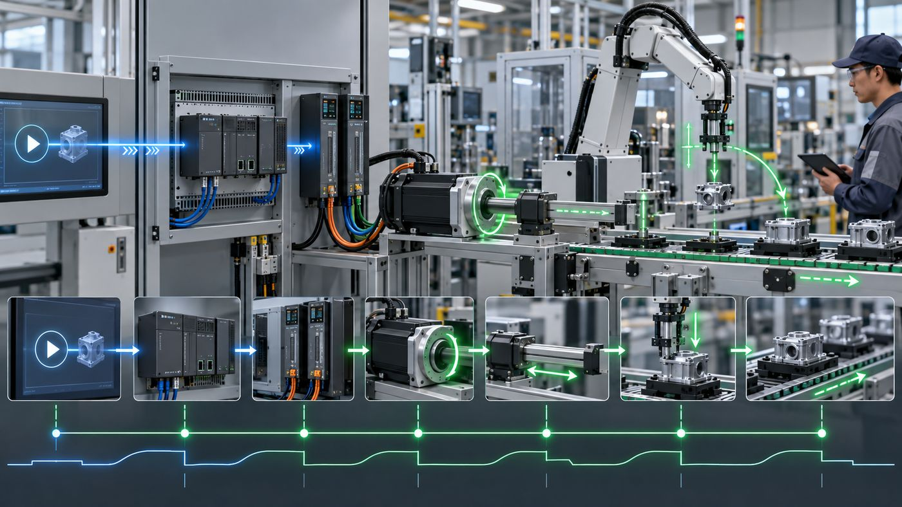
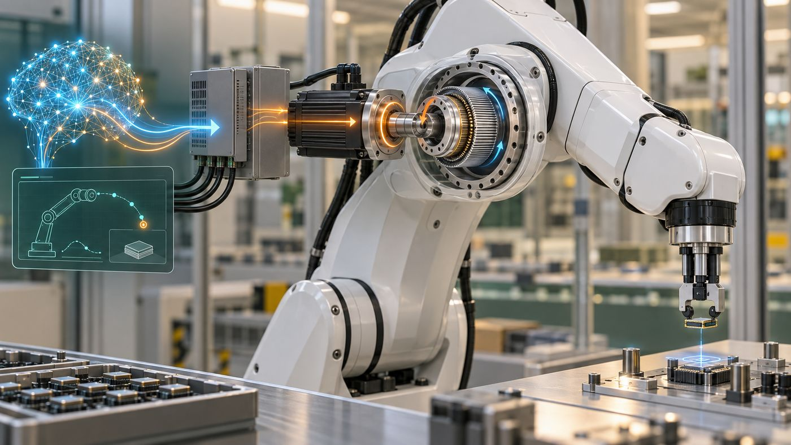
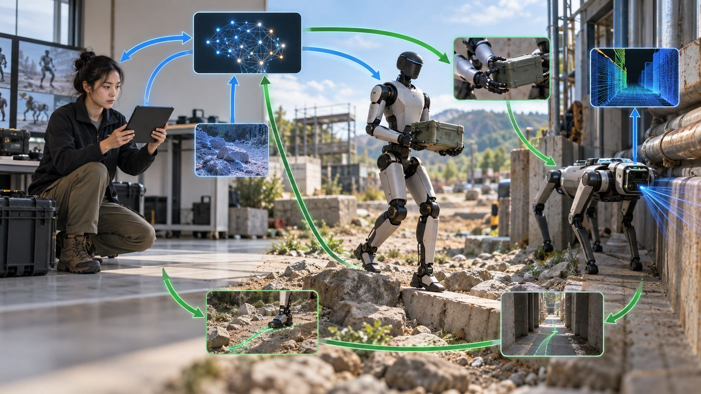
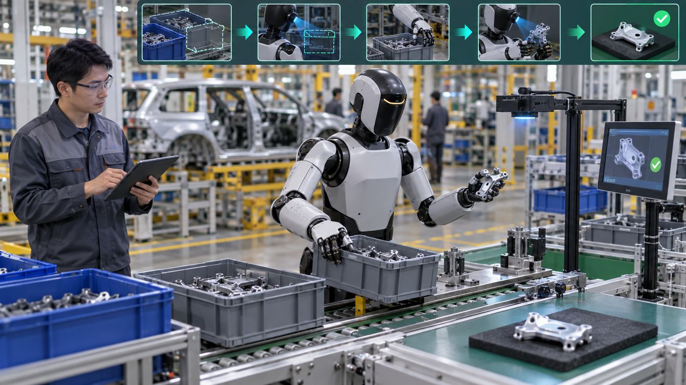

智谱 它要会想 · 智能本身 汇川技术 它要能动 · 让机器人动起来 绿的谐波 它要能动 · 机器人关节 宇树科技 它要有身体 · Agent 的身体 优必选 它要有身体 · 工厂替岗 Cloudflare 请求要从这里过 · Agent经济的物理收费站 小马智行 它替人干活 · AI 自己开车 讯飞医疗 它替人干活 · AI 帮医生看病 Tempus AI 它替人干活 · AI 帮医生看病 · 美国 护城河 九家横向 · 优势会不会越用越厚
智能体来了，先看它绕不开的 9 件事
硅基智能体大规模降临，像外星人要落地：要会想、要能动、要有身体、请求要从这里过、还要替人把活干完。下面 9 家，一家占一件事。用来想清楚，不是买入名单。
怎么读： 先代入使用者，再看钱怎么来，最后停在「断在哪」。缺的证据会标出来，不补故事。美股 3、港股 3、A 股 3。Circle 从正选落到备选，整段还在下面。
会想 → 能动 → 有身体 → 过收费站 → 替人干活
先看护城河： 方向对只是起点，还要看优势能否因真实使用而变厚、客户是否更难换、钱是否持续留下。打开九家横向分析 →
一张表看全貌 10 倍测试 · 护城河阶段 · 断在哪——点击任一行跳到详细分析
它要会想 智能体自己就是产品。过去学工具是中间工序，现在直接交结果。
它要能动 指令要变成力和动作，必须经过电机、控制器和关节。这是物理层，AI 替不掉。
它要有身体 写代码可以在云上完成，搬货、巡检、上产线必须有一个身体。
请求要从这里过 所有访问请求都从边缘网络过。机器访问越多，放行和拦截越被需要，按请求量收费。
它替人干活 出行、看病这些真需求不会消失。变的是谁来干、怎么干。
备选 从正选落下的，整段留下对照，不占上面 9 个格子。
先想清楚： AI 越强、越便宜，什么让这家公司三年后仍能留住客户、提高收入或议价权？
先给结论： 护城河不是“有数据”或“用户多”其中一项。它必须把稀缺资产带进真实工作，让反馈和信任不断回流，再让客户更难换走，最后变成持续收入。当前最像已有硬底座的是 Cloudflare、汇川技术、绿的谐波；最有数据增厚潜力的是 Tempus 和讯飞医疗；小马智行、优必选在把运营和交付变成壁垒；智谱已经出现“政府协同分发＋国产信任”的增厚路径，但客户锁定仍待证；宇树的生态闭环还没有坐实。
护城河怎样生成
稀缺资产 网络、工艺、许可、临床数据、知识与渠道
真实使用 客户把结果交给它，产品进入日常工作
反馈与信任 结果可验证，数据、标准和合规经验回流
客户难换 迁移会损失结果、经验、认证或生态协同
持续收入 复购、扩容、加购或更高议价权
这是一条因果链，不是五个可以单独打勾的标签。
任何一环没有证据，护城河就只能写成命题。 覆盖数、合作名单、模型分数和一次性出货，都不能单独证明客户锁定。
九家现在站在哪
已有硬底座 Cloudflare：网络规模与统一控制面
逐家护城河账
Cloudflare NET · 美股 已形成底座 网络＋迁移成本
护城河： 全球边缘网络、统一控制面和一套能覆盖安全、连接、计算、存储的产品体系。公司披露每增加服务器或城市，整个网络的效率都会提高。
AI 增厚： Agent 请求增加会提高安全、路由、边缘计算和开发平台的使用；开发者把应用建在 Workers 等平台上，会增加迁移成本。
断点： AI 流量增长还没有单独对应的收入和利润。云厂商把边缘、安全和 AI 打包，也可能削弱独立收费。
来源：2025 年 10-K · 2026Q2 10-Q
小马智行 PONY · 美股 形成中 许可＋运营
护城河： 城市许可、全栈自动驾驶、真实道路安全记录、车队管理和 OEM/TNC/物流伙伴。公司截至 2025 年底披露已取得四个一线城市全部 24 类 Robotaxi 许可。
AI 增厚： 真实道路数据、PonyWorld 仿真和边缘案例回流，可能形成“跑得多 → 改得快 → 更容易拿许可和扩城”的循环。
断点： 许可可被收回，伙伴并非天然排他；注册用户不等于复购。要看接管率、事故率、单位经济和同一城市持续付费。
来源：2026 年 20-F · 2026Q2 业绩
Tempus AI TEM · 美股 数据底座 临床入口
护城河： 检测入口把基因组、临床、影像和治疗结果连在一起，并配有医院、学术中心、药企网络。2025 年报披露约 14 亿份文档、860 万去标识患者记录和超过 450 PB 数据。
AI 增厚： 检测产数据，数据训练模型，模型改善诊疗和药研，更多患者与药企再进入系统；2026Q2 已签约约 2 亿美元数据和应用许可。
断点： 数据是否排他、患者结果是否持续回流、药企是否长期扩购，以及数据收入能否超过检测收入，仍需跟踪。全基因组计划目前属于建设中的未来资产。
来源：2025 年 10-K · 2026Q2 业绩 · 全基因组计划
智谱 02513 · 港股 形成中 政府分发＋国产信任 模型＋Agent 生态
政府协同分发 → 国产／可控信任 → 低门槛首用 → Agent／编码反馈 → 续费扩席
前两步已有官方活动与政策文本，后三步仍要用真实企业留存和扩席来证明。
护城河： 模型能力、推理成本控制、开发者生态之外，智谱已经出现一条“政府协同分发＋国产信任”的路径。杭州与上城区联合推出“全城 Coding 计划”：在杭工作人员／杭州高校在校生个人季卡综合减免 44%、年卡 51%，上城区企业年卡综合减免 55%，把模型第一次使用推进到个人、学生和企业研发团队。
AI 增厚： 政策入口降低首用成本，国产模型、境内个人信息存储和受控合规叙事，可能降低中国企业把敏感任务交给模型的采用阻力；真实编码任务、工具调用、失败重试和 Agent 轨迹再回流模型，才可能形成“更多使用 → 更好交付 → 更多续费”的循环。
断点： 杭州活动时间为 9 月 10 日至 12 月 9 日、额满即止，且减免是智谱让利与政府减免的综合优惠；它证明了分发和信任属性正在出现，不能直接证明政府排他采购、数据排他权或永久锁定。还要核对企业版合同与安全审计、同一客户续约／扩席、敏感任务是否留在智谱，以及 Agent 收入占比和毛利能否持续上升。
来源：2026 年中期业绩 · 杭州全城 Coding 计划官方规则 · 开放平台隐私政策
讯飞医疗 02506 · 港股 形成中 机构网络＋数据反馈
护城河： 政府和医院的进入能力、医疗知识体系、区域实施经验和合规信任。2026 年半年报披露覆盖超过 7.7 万家基层机构、700 多家医院。
AI 增厚： 公司披露每日超过 170 万次真实诊疗交互，并通过医生复核校准模型；与中国疾控中心联合开发的流调系统已进入全国推广阶段。
断点： 覆盖数不等于付费留存。数据归属、授权范围、同一机构续费和诊疗结果改善仍没有被充分公开。
来源：2026 年中期业绩 · 2025 年度业绩
优必选 09880 · 港股 形成中 工业交付＋具身数据
护城河： 人形机器人全栈技术、工业场景交付、制造质量和 BrainNet/Co-Agent。公司正在建设数据采集、标注、训练和部署的一体化平台。
AI 增厚： 真实工位数据、遥操作、VLA 和多机器人协同，可能形成“部署 → 数据 → 模型 → 更快交付”的循环；标准制定也会积累行业信任。
断点： 目前仍要证明同一工厂连续运行、扩容和复购。生产能力和一次性大单不能代替客户锁定。
来源：2026 年中期业绩
汇川技术 300124 · A 股 已形成底座 工业平台＋客户协同
护城河： 二十多年工业自动化 Know-how、完整产品矩阵、认证和交付服务。2025 年通用伺服中国份额约 31%，低压变频器约 20%。
AI 增厚： “机器人＋视觉＋AI”可以把控制、驱动、工艺和设备数据接起来，增加交叉销售和迁移成本。2026 年上半年公司披露研发人员 8,149 人、专利及软件著作权 3,464 项。
断点： 这是一条工业护城河，不是已经验证的 AI 数据网络。机器人相关收入和 AI 带来的增量仍需从集团口径中拆出来。
来源：2025 年报 · 2026 年半年报
宇树科技 688836 · A 股 命题待证 成本＋开源生态
护城河： 低成本、高性能、快速量产、全栈自研和开源开发生态。招股书披露 2025 年四足机器人销量约 2.3 万台、人形机器人销量约 5,215 台。
AI 增厚： 开发者在宇树硬件上训练和部署，会沉淀适配经验；公司也计划建设真实数据集和数据飞轮。
断点： 开源扩大生态，也降低锁定。科研和消费出货还不能证明工业客户为作业持续付费；数据飞轮目前更多是建设计划。
来源：科创板招股说明书
绿的谐波 688017 · A 股 已形成底座 精密制造＋工艺数据
护城河： 齿形、材料、超精密加工、全零部件自主供应、质量控制、认证和客户定制。2026 年半年报披露已建立应用数据库、全生命周期评估和客户反馈/数据分析闭环。
AI 增厚： 智能制造、传感器嵌入、寿命预测和机电一体化，会让工艺数据进一步提高良率、可靠性和定制响应速度。
断点： 它不靠用户网络或 Agent 交付。要继续盯哈默纳科降价、客户双供、直驱替代和认证切换周期。
来源：2026 年半年报 · 行业与市场份额核查
读这张账时的三条纪律
公司披露的用户数、覆盖数、数据量和合作项目是事实；它们是否形成护城河，是另一层判断。
没有数据权利、客户结果、续约/扩容和迁移成本的证据，不把“飞轮”“网络效应”“先发优势”写成完成。
AI 增量只有在反馈能回流、客户难以迁移、收入能看见时，才算护城河变厚。
下一道问题： 这九家的护城河谁已经在账上体现，谁还只是未来三年的假设？回到总览 ，再逐家打开证据。
现在要想的事 · 它要会想
智能本身 智谱 · 港股 · 国内 Codex
港股 先想清楚： 量价齐升和国产信任能持续吗？模型都变便宜之后，智谱凭什么留住客户？
断在哪 模型变便宜后客户能否留住还没证据。 政府协同分发和国产信任正在出现，但企业版合同续约、敏感任务留存、Agent 收入占比都还没有已核数据。
逻辑链 阅读版
先代入
谁在用，要完成什么 谁有需求 要把任务交给 AI 的企业和开发者 什么场景 写文档、写代码、生成内容，或给自己的产品加上 AI 能力 要完成什么 直接拿到任务结果，不再自己学工具、自己训模型
AI 越强，会怎样？ AI 越强 推导
→ 智谱模型能完成的任务越多 推导
→ 调用量增长 公司披露
→ 客户认为更强的模型更值钱 推导
→ 单价也涨 公司披露
→ 量价同升。它就是 AI 本身。 公司披露
钱怎么流进来？ 不得不付 你要让 AI 完成任务就要调模型，调模型就要付 token 费。
持续付 任务不会停。企业每天都有新的文档要处理、代码要写、内容要生成。
同行也付 竞品也在调 API 给自己的产品加 AI 能力。不调就落后。
越付越多 量价齐升——调用量 ×40（用得更多），均价 +101%（更强的模型更值钱，客户愿意付更高价）。
凭什么是这家，不是别人？
形成中
护城河 模型能力＋推理成本控制＋开发者生态，加上一条正在出现的「政府协同分发＋国产信任」路径。杭州全城 Coding 计划把首用成本降到极低，境内数据存储降低敏感任务的信任阻力。
AI 怎么让它更厚 真实编码任务、工具调用、Agent 轨迹不断回流模型，可能形成「更多使用→更好交付→更多续费」的循环。政策入口＋国产信任＋模型迭代三条线叠加。
有真实用户在持续付钱吗？
⚠️ 谁在付钱？付费日活同比 +603%，API 占收入 86.5%。但具名客户零——没有一家企业名字和金额对得上。
❌ 续费了吗？前十大约占调用量 40%，说明有大客户在用。但同一批客户留了多久、加没加量，无数据。
❌ 客户结果变好了吗？缺。没有具名客户用智谱前后的任务成功率、响应时间或总成本对照。
❌ 有没有带人来？注册 740 万、杭州政府活动推广——但这是获客，不是老客户介绍新客户。扩散证据缺。
量价齐升证明有人愿意付且付更多；但「谁在付」和「会不会留下」目前是黑箱。
这门生意最怕什么？
模型变便宜后，客户直接换更便宜的或自己部署开源。
如果成真 裸 token 商品化、单价趋零。收入靠新客户涌入，老客户走了也看不出来。整体毛利只有 26.4%，研发是收入的 2 倍。
反面证据 量价齐升——不只是量在涨，单价也在涨 +101%。如果只是被便宜用着（量涨价跌），那是商汤模式；但智谱是量价同升。政府协同分发和国产信任也在形成新的进入壁垒。
当前判断： 量价齐升是目前最强的反面证据。但如果下一期毛利继续薄、续约数据继续缺，这条反证会变弱。
为什么是这个位置 企业和开发者需要把任务交给 AI 完成。大模型不只是造智能的工具——它本身就是产品，在吃旧软件的位置。过去学会 P 图、学会用 WPS 是中间工序，现在直接交结果。
为什么是这家，不是别人 量价齐升：API 调用量 ×40、均价 +101%、毛利转正。这是最接近 Codex 的模式——不只是用的人多了（量涨），而且每次调用更值钱了（价也涨）。说明客户认可智谱模型的差异化价值，不只是图便宜。H1 收入 9.54 亿，已超 2025 全年。
另一条增厚路径是政府协同分发与国产信任。杭州与上城区联合的全城 Coding 计划 ，给在杭工作人员／杭州高校在校生个人季卡综合减免 44%、年卡 51%，给上城区企业年卡综合减免 55%，降低了个人、学生和企业研发团队的首用门槛。开放平台隐私政策 写明中国境内运营中收集和产生的个人信息存储在中国境内，目前不会跨境传输或存储个人信息；这能成为中国客户的信任属性，但活动是限时、额满即止，隐私政策也不能替代企业版合同、安全审计和续约证据。
谁在付钱 · 完整表 付钱的是买 API 用量或部署的企业和个人开发者。使用者是调用模型的开发者、应用企业和私有化组织。免费注册不计付费。2026H1 开放平台及 API 8.25 亿元，占收入 86.5%；本地化部署 6,704 万元（−54.6%）；企业级智能体 5,556 万元。
1. 具名付费客户
来源：阅读版 / C 档 co-20；2026 中报媒体转述（网易科技、金融界、36氪纪要、同花顺 2026-09-15）。「大企业 AI 预算」「740 万注册」不算具名客户。
2. 客户买的是什么结果
客户要完成开放式任务：听懂、组织回答、请求业务动作，而不自己训练模型。阅读版 / C 档：没有具名客户用智谱前后的任务成功率、响应时间、总成本对照。缺。
3. 有没有再付
付费日活 +603% 是活动扩大，不是同一批客户留存。前十大调用 +98 倍是「当前大户比年初打得多」，不能证明这十家从年初就是这十家。API 续用率、部署续约率、NRR：缺。部署收入同比 −54.6%，是反向信号，不能写成加购。
4. 持续还是一次性
API（86.5%）按用量，形态持续。部署（约 13.5%）更像项目。智能体金额小。续约未取得，不能写成「已经持续」。
收入事实 FY2025 收入 7.24 亿元（+132%）。H1 2026 收入 9.54 亿元（已超全年）。API 约 8.25 亿占 86.5%。毛利率 26.4%。股东应占亏损 20.71 亿。
模型服务已形成收入，API 付费调用成为最新半年的主要来源。
完整年度收入 亿元人民币
最新一期 · 2026-01-01 至 2026-06-30 · 半年累计 9.54 亿元人民币 同比 +399.7%
-20.71 亿元人民币 · 股东应占
看收入结构与需求的对应关系
钱从哪里来 向企业和开发者提供模型 API 与云端服务，也提供本地化部署和相关服务。 与本页需求链的关系 智谱同时处在模型供给与智能使用服务两侧。API 调用量必须连同实际收入和单价看，才能判断需求扩张。 收入变化怎么读 2026H1 收入约同比 +400%；调用和付费日活增长是补充证据，但不能由调用倍数反推收入倍数。
↑ 返回总览
FDE 企业研究 · 港股 · 2026 年 9 月 15 日
智谱 HKEX · 02513
把理解、生成和推理做成可调用的模型；企业按 API 用量和部署付钱，任务越重，消耗越大。
2026 年上半年收入 9.54 亿元人民币，同比约 +399.7%，已经超过 2025 全年的 7.24 亿元；其中开放平台及 API 约 8.25 亿元，约占 86.5%。同期股东应占亏损 20.71 亿元，对上年同期 23.51 亿元收窄约 11.9%。智谱卖的是智能能力本身，不是把 AI 接进系统的实施劳动。财务汇总 ↗ 中期报道 ↗
当前判断： 收入、调用量和 API 单价在 2026 上半年同时上行，这是「量价齐升」的证据，不是叙事；杭州与上城区的联合活动又显示政府协同分发和国产信任正在出现，但它是限时获客政策，不等于排他采购或客户锁定。整体毛利率只有 26.4%，年度亏损还在扩大到 2025 年的 46.98 亿元，API 客户续用和部署续约率暂缺。值得深入研究，还不能写成已经走通的利润生意。
生意怎么运转 客户为何继续买 增长与利润 AI 带来的变化 当前判断 行情与出处
01 / 先认识这门生意 客户买的，究竟是什么？开发智能应用的开发者，以及要把具体业务交给 AI 的企业团队，要的不是「一个大模型」这个产品形态，而是：以能承受的成本，获得足够可靠的智能能力，让具体任务达到可用标准，并能持续、稳定地调用。 智谱把理解、生成和推理做成可调用的 GLM 模型；工具调用让模型判断何时查数据、调用什么函数，并生成参数，再由应用自己执行工具、返回结果。官方工具调用说明 ↗ 研究底稿 ↗
开发者 / 企业 要完成的任务
发任务 →
智谱 GLM 理解、推理、调工具
返回结果 →
应用侧 回答或业务动作
收费 💰 按 token / 调用量收费 · API 占收入 86.5%
🔁 AI 越强 → 能完成的任务越多 → 调用量和单价一起涨（量价齐升）
从用户目标到可交付结果：模型不只是聊天窗口，是能调用工具并交付工作的入口。 概念场景图，不代表真实客户现场或产品照片。因果链：用户目标 → 模型推理 → 工具调用 → 可交付结果
三个工作场景，帮助理解需求。情境示意；具体客户与效果仍看下方证据。工作情境示意。
AI 必要性链示意，不是具名客户实录，也不代表量价同升已经走通。
钱从两条路来。一条是云端 MaaS / API，按 token 调用计费，另有 Coding Plan 订阅；一条是企业级本地化部署，偏一次性。2026 上半年，API 已经占到收入的大约 86.5%，本地化部署从 1.48 亿元降到 6704 万元，同比约 −54.6%；企业级智能体从 1374 万元升到 5556 万元，同比约 +304.4%。主业已经从「卖部署项目」转到「卖持续调用」。 研究底稿 ↗
新增一条可能的护城河： 杭州与上城区联合的全城 Coding 计划把政府协同分发、个人／学生补贴和企业研发团队导入放在同一条链上；智谱开放平台隐私政策写明中国境内运营中收集和产生的个人信息存储在中国境内，目前不会跨境传输或存储个人信息。它们降低首用和信任阻力，但是否带来活动后的续费、扩席与敏感任务留存，仍没有公开证据。活动规则 ↗ 隐私政策 ↗
判断时留意两件事。第一，模型发出调用请求后，权限、数据和任务验收仍在应用侧，不会自动随模型获得。第二，AI 对开放式语言理解和动态任务自动化必要性较强，不等于智谱这一家供应商不可替代——固定流程仍可用脚本，复杂判断人未必弱，差异主要在并发量和单位成本。研究底稿 ↗
进一步看：产品、收费与需求三问对照
客户真正要的结果
开发者与企业要的是「以能承受的成本获得足够可靠的智能能力、让任务达到可用标准并稳定调用」。关键在于：这是一个真结果（任务做完了），还是一个中间步骤（买了调用权但不知道用来干嘛）。
需求会不会变
智能能力供给是真需求；token 是 agent 的消耗品，任务越重对模型能力要求越高、越值钱；卖模型能力不是「把 AI 接进系统的实施劳动」。但也有担忧：如果卖的只是手段、席位或 token，满足方式一换，它还在不在？
收费位置
分业务金额来自中期业绩报道；年度总账以东方财富港股财务汇总为准。三行相加与总收入差约 0.06 亿元，未单列。
02 / 再看真实付费 谁在用，谁在继续付钱？实际使用者是调用模型的开发者、AI 应用企业，以及需要私有化部署的组织。付费方是购买 API 用量或部署服务的企业及个人开发者；免费注册者不计作付费。续用证据暂缺 ：付费日活增加说明付费活动扩大，还不能回答同一批客户留存多久、是否加量，以及收入集中度。研究底稿 ↗
86.5% 2026H1 API 占比 开放平台及 API 约 8.25 亿元。去年同期约 2910 万元、占 15.2%。主业已经换成持续调用。
~40% 前十大客户调用量 既有核查：前十大约占平台调用量 40%。注册用户约 740 万、付费日活同比 +603%，三者口径不同，不能互换。
用户规模与价格来自 2026 中期业绩报道；注册、日活、调用集中度与付费企业数量各不相同。中期报道 ↗
客户为什么愿意继续调用？他们要完成开放式任务，自己训练模型往往不划算。2026 上半年还有一组和「卖便宜 token」相反的数字：Token 调用量较年初增长超过 40 倍，API 平均售价较年初提升约 101%，单位 token 推理成本较年初下降约 80%，开放平台及 API 毛利率从 −0.4% 转到 24.6%。用量涨、单价也涨，这和商汤「用量涨 22 倍、收入只涨 23%」不是同一条路。 但这组数字是公司 / 媒体口径，不是逐家合同。
客户实际多做成了什么，还缺什么证据？
暂无具名客户用智谱前后的任务成功率、响应时间、总成本对照。核心检验问：客户是否有模型必须完成的真实任务，并以任务成功率、响应时间和总成本来决定使用？目前只能确认付费活动在扩大，不能确认同一批客户留下了、加量了，或因此省了多少钱。
目前能确认：API 已成收入主体，调用量、付费日活和平均售价在 2026 上半年同时上行。 同一批客户续用多久、收入是否过度集中在前十、客户任务结果是否变好，都还缺。
展开：谁在用、谁付费、目前还缺哪些证据
来源：中期业绩报道与研究核查；杭州活动与隐私政策见新增出处 ↗ 。不以注册用户或调用倍数反推收入倍数。
看一个场景：智谱、企业客户和一线使用者，各自付出和获得什么？
先看一个场景：一家企业要做客服助手，把智谱模型接到自己的应用里；一线客服或最终用户每天问问题、拿回复，企业按调用付钱。
智谱 模型推理与工具调用
智能能力→ ← API 用量或部署费
企业客户 采购并接入应用的一方
客服或业务应用→ ← 日常使用与反馈
一线使用者 问问题、拿结果的一方
客服助手场景示意；具体采购、合同与效果需逐案核对。一线使用者通常不直接向智谱付费。
智谱
付出什么 模型训练与推理、算力、研发。2026H1 研发开支 21.31 亿元，约为同期收入的 2.2 倍。单客成本未披露。
直接获得什么 API 调用费、订阅和部署款。整体毛利率 26.4%；API 毛利率已转到 24.6%。
希望进一步得到 · 待验证 老客户加量快于降价，API 毛利扩大，亏损收窄不靠一次性项目。ARR 是管理层口径，不是确认收入。
企业客户
付出什么 按用量付 API，或付一笔部署；还要自己接工具、管权限和验收。单客合同金额未披露。
直接获得什么 不自己训练模型，就能让应用听懂任务、组织回答、请求业务动作。
希望变得更好 · 待验证 任务成功率更高、响应更快、总成本可承受。需要具名任务的前后对照。
一线使用者
付出什么 提问、纠错和把回复接进工作。这是使用投入，不是直接付给智谱的费用。
希望体验更好 · 待验证 少返工、少等。体验改善不能从调用量直接推出。
值得检验的一条联系： 如果企业因为任务真的做成了而继续加量，收入增长才站得住；如果只是新客户涌入、老客户被开源或更便宜的模型换掉，量价齐升就会断。
产品机制参照官方工具调用说明；三方效果是分析框架，尚无同一具名客户的完整前后对照。官方产品说明 ↗
客户愿意调用只是第一步，还要看这些钱在公司的账上留下了什么。
03 / 用财务检验生意 收入在增长，利润也一起变好吗？完整年度收入从 2022 年的 0.57 亿元爬到 2025 年的 7.24 亿元，三年都是三位数增长；股东应占亏损同期从 1.43 亿元扩到 46.98 亿元。 2026 上半年收入 9.54 亿元，已经超过 2025 全年，亏损收窄到 20.71 亿元。收入和利润此刻不在同一方向。下面先看完整年度，再单独看最新半年。
总收入
分业务收入
股东应占溢利
完整年度收入逐年翻倍量级增长
单位：亿元人民币。营运收入 / 营业额；财年止于 12 月。半年数不画进本图。
同比约 +116.9%、+150.9%、+131.9%。三年都是三位数增长。财务汇总 ↗
分业务：只有 2026 上半年拆得开
单位：亿元人民币。年度分业务暂无数据；下表是半年数，不与年度同轴。
三行相加约 9.48 亿元，与总收入 9.54 亿元差约 0.06 亿元，未单列。不能用半年结构外推以前年度。研究底稿 ↗
股东应占：四个完整年度都是亏损，且在扩大
单位：亿元人民币。未调整；负值在零轴左侧。刻度按 2025 年 −46.98 亿元取满。
FY2025 持续经营税后亏损 47.18 亿元，图用股东应占 46.98 亿元。不替换成经调整亏损。2026H1 股东应占 −20.71 亿元，对 2025H1 的 −23.51 亿元收窄 11.9%；媒体写的「归母同比收窄 12.1%」更接近持续经营口径。财务汇总 ↗
最新半年单独看：2026 年 1—6 月 2026-08-31 前后披露中期业绩；半年数据不与年度同轴拼接。总收入与股东应占以东方财富汇总为准，分业务与用量以中期报道核查为准。
收入 9.54 亿元 同比约 +399.7%
开放平台及 API 8.25 亿元 约占收入 86.5%
股东应占 −20.71 亿元 对 2025H1 −23.51 亿收窄 11.9%
经调整净亏损 19.64 亿元（媒体转述）。整体毛利率 50.0%→26.4%；API 毛利率 −0.4%→24.6%。财务汇总 ↗ 中期报道 ↗
管理层还披露过一组 ARR（年度经常性收入口径，不是确认收入 ）：3 月 31 日 2.5 亿美元 → 7 月 10 亿美元 → 8 月末 16 亿美元，年底指引 24 亿美元。它只能说明公司怎么看管道，不能替换 9.54 亿元这笔已经入账的收入，也不能证明利润会跟上。电话会报道 ↗
展开：年度完整数据与来源范围
年度与 2026H1 总账对照东方财富港股财务汇总。分业务、毛利率、用量、ARR 来自中期业绩报道核查。查看对照底稿
图解：量价齐升和毛利变薄同时发生
2026 上半年几条方向不同的数字放在一起看。横条只作方向示意，不是同尺度比较。
读法：收入和单价在涨，毛利仍然薄，亏损只是收窄。量价齐升证明需求在扩张，不证明这门生意已经赚到规模利润。研究底稿 ↗
04 / 单独检验 AI 增量 模型越强，这门生意是变大还是被换掉？10 倍测试：AI 聪明 100 倍、便宜 10 倍，这家企业的生意是变大还是消失？过这道题的只有两类——就是 AI 本身，或物理层不可能被软件内置。智谱就是 AI 本身，国内 Codex，量价齐升。
逻辑链：agent 大规模干活要持续调用模型推理与工具能力，token 是消耗品，任务越重越值钱；调用越多、任务越重，它越被需要。2026H1 的收入、调用量、API 均价三条同时上行，是这条链的财务承接。研究底稿 ↗
可能被增强的路径 模型越强，单次能完成的编码 / agent 任务越长，token 消耗和付费日活上去，高价值任务还能提价。API 毛利已经从负转到 24.6%。前提是客户继续把任务交给托管 API，而不是自己部署开源模型。
可能被绕开的路径 开源可自部署压价；掉出能力前沿后裸 token 商品化、单价趋零；前十大约占调用量 40%；分销还受云厂商制约。核心问题是：如果满足方式换了，智谱还在不在新位置上。
因此，收费方式与「它会不会被换掉」要分开说：按用量收 API 已经是收入主体；客户会不会留下、毛利能不能覆盖研发，还没有过门。
进一步看：用量增长可能怎样变成可留下的生意？
下面用虚线展开两条待验证的联系；它们补充上面的分析，不代表利润已经发生。
用量增长，会沿着哪一条路走？
留下 任务变重
调用与单价
API 毛利
被换 开源或新入口
托管 API
需求转向
需要老客户加量、收入集中度、续约率和 API 毛利能否继续扩大，才能把虚线补实。调用 40 倍、ARR 16 亿美元都不是利润证据。
关键问题：如果「客户集中（前十大约占调用量 40%）、开源可自部署压价、整体毛利仅 26.4%」同时发生，智谱承接的需求会转向谁，还是需求本身会消失？要验证三件事：量价齐升能持续吗？API 毛利转正后能扩大吗？模型商品化后智谱凭什么留住客户？
05 / 收到一个清楚的判断 现在怎么看，下一步最该验证什么？智谱已经把智能能力卖成了以 API 为主的收入，2026 上半年量价齐升有数；它还没有把这门生意做成利润。 值得深入研究。量价齐升是真实数据，不是叙事；但客户留存、毛利扩张和竞争替代这三道门还没过。
最关键的一问
老客户调用增长能否持续快于价格下降，并让 API 毛利扩大到覆盖研发——还是收入主要依赖新客户涌入，随后被开源或新入口换掉？
同一批 API 客户的留存、加量和收入集中度开始披露，而不只是付费日活和前十调用占比。
API 毛利率在 24.6% 之后继续扩大，整体毛利率不再只停在 26.4%，研发费用率从收入的 2 倍往下落。
开源自部署或大厂打包没有把托管 API 的量价齐升打断。
这几条变强，才有理由提高对「国内 Codex」的判断；它们长期缺失或走弱，就需要收回相应预期。价格是否合适，放在另一个问题里判断。
对照着看： 同一件事上还可以看 MiniMax、昆仑万维。入选这家，是不是比它们更像「就是它」？
现在要想的事 · 它要能动
让机器人动起来 汇川技术 · A股 · 机器人的肌肉
A股 先想清楚： 机器人放量真的拉动了伺服订单吗？
断在哪 机器人收入还没从集团口径中拆出来。 汇川总盘子在长，但伺服/控制器里多少来自机器人客户、多少来自传统工业，没有独立披露。
逻辑链 阅读版
先代入
谁在用，要完成什么 谁有需求 要让设备或机器人动起来的工厂 什么场景 产线要转、机器人要走、新工厂要装控制 要完成什么 把指令变成力和运动
AI 越强，会怎样？ 机器人越多 推导
→ 伺服和控制器需求越大 推导
→ 汇川作为 A 股最大最全的供应商，直接受益。物理运动不可内置——AI 再聪明也需要电机转、需要控制器算、需要减速器出力。 推导
钱怎么流进来？ 不得不付 设备要转就要伺服，产线要控制就要 PLC。物理运动的基础件。
持续付 设备有寿命，要换；产线要升级，要加；新工厂建设，要装。不是一次性生意。
同行也付 整个制造业都在自动化升级，不升级就被淘汰。汇川是 A 股品类最全的供应商。
越付越多 机器人放量 → 每台机器人都要伺服和控制器 → 需求从传统工控扩展到具身智能 → 新增量叠在旧基座上。
凭什么是这家，不是别人？
已有底座
护城河 二十多年工业自动化 Know-how、完整产品矩阵、认证和交付服务。通用伺服中国份额约 31%，低压变频器约 20%。全链条覆盖意味着下游换供应商成本高。
AI 怎么让它更厚 「机器人＋视觉＋AI」可以把控制、驱动、工艺和设备数据接起来，增加交叉销售和迁移成本。研发人员 8,149 人、专利 3,464 项。
有真实用户在持续付钱吗？
⚠️ 谁在付钱？前五家客户贡献约三成销售（135 亿），但公司隐去所有名字。知道有大客户，不知道是谁。
⚠️ 续费了吗？工控硬件随产线扩建自然复购，行业常识。但没有同客户年度追加数据。
❌ 客户结果变好了吗？缺。没有具名产线用汇川前后的节拍、良率或停机时间对照。
❌ 有没有带人来？缺。新能源车定点 70 余个、海外 9 个，但这些是汇川自己拓的，不是老客户介绍的。
集团层面确实在持续赚钱（归母 50.5 亿），产线复购是行业常识；缺的是「机器人客户」这一层的独立证据。
这门生意最怕什么？
机器人放量了，但伺服订单被日系或其他本土公司拿走——方向对，钱没落到汇川头上。
如果成真 日系品牌降价抢国产替代份额；机器人厂商自研伺服（宇树已有自研电机）；451 亿里机器人部分可能很小。
反面证据 汇川是 A 股品类最全的供应商，全链条覆盖意味着换供应商的成本高。通用伺服中国份额约 31%。传统工控是底座——机器人没来之前也能活。
当前判断： 传统工控底座足够厚，方向判断不依赖机器人放量。但「机器人拉动汇川」这条链还没有独立证据——这是值得继续追踪的点，不是否定它的理由。
看文字版：为什么是这个位置 任何机器人要动，都需要伺服电机和控制系统把 AI 的指令变成物理运动。这是纯物理层——AI 不能替代物理运动。不管是人形、四足、协作臂还是仓库机器人，都要用伺服和控制器。
看文字版：为什么是这家，不是别人 A 股最大的伺服和工业控制企业。品类最全——从伺服电机到控制器到 PLC 到机器人本体，全链条覆盖。FY2025 收入 451 亿元，归母 50.5 亿元——9 家里最能赚钱的。
谁在付钱 · 完整表 付钱和使用的是设备制造商、工业企业和集成商。FY2025 集团收入 451.05 亿元。年报把工业自动化与数字化写成约 222 亿元（通用自动化约 169 亿，其中伺服约 68.5 亿、变频器约 57 亿、PLC&HMI 约 18 亿；智慧电梯约 52 亿）。机器人分部未单列。
1. 具名付费客户
来源：汇川 2025 年报及年报摘要（巨潮 2026-04-28）；阅读版 / C 档 supp-35。西门子、三菱是竞争对手，不是客户。
2. 客户买的是什么结果
设备厂和工厂要的是：电机、传感、执行按节拍做完动作，产线不停。本批没有具名客户用汇川前后的节拍、良率、停机时间对照。缺。
3. 有没有再付
工控硬件会随产线扩建再买，这是行业常识，不是汇川交出的同客户复购表。统一 AI / 机器人客户续费率：缺。前五有金额，但看不见去年是不是这五家。
4. 持续还是一次性
设备采购偏一次性；产线扩建和备件会再买。不是订阅。新能源车「定点 → SOP 放量」是项目生命周期，不是 NRR。
收入事实 FY2025 收入 451 亿元。归母 50.5 亿元。H1 2026 收入 +20%，归母 -5.35%。
工业自动化、控制驱动、机器人及其他业务，按不同客户与场景销售。
最近取得的收入 · 2026-01-01 至 2026-06-30 · 半年累计 246.75 亿元人民币 同比 +20.3%
同期归母净利润 +28.10 亿元，同比 -5.35%；扣非 27.56 亿元，同比 +3.15%。
↑ 返回总览
FDE 企业研究 · A股 · 2026 年 9 月 15 日
汇川技术 SZSE · 300124
把驱动、控制和机器人接到工业设备，让上层智能生成的动作能稳定做出来；底座是控制与传动，不等于大模型推理
2025 年营业总收入 451.05 亿元人民币，同比 +21.77%；归母净利润 50.50 亿元。2026 上半年收入 246.75 亿元，同比 +20.31%；归母 28.10 亿元，同比 −5.35%，扣非归母同比 +3.15%。定位「骨骼与肌肉」：物理运动不会被软件内置。本页只回答值不值得继续看，不回答什么时候下注。财务汇总 ↗
当前判断： 集团已经是能赚钱、收入还在长的控制与传动公司，这是事实；机器人分部收入暂无单列，不能把 451 亿或 50 亿当成「具身放量已经落到汇川」的证明。值得看，下一问仍是伺服和驱动订单有没有被机器人拉起来
生意怎么运转 客户为何继续买 增长与利润 AI 带来的变化 当前判断 行情与出处
01 / 先认识这门生意 客户买的，究竟是什么？设备制造商与工厂要的不是「一套控制器」这个产品形态，而是：电机、传感与执行机构按要求准确协同 ，设备能按节拍完成动作，并能调试、维护和升级。汇川把驱动、控制和机器人接到工业设备，让上层智能生成的动作能稳定执行。底层运动控制并不等于大模型推理。研究底稿 ↗
设备厂 / 工厂 让设备和机器人动起来
指令 →
汇川 伺服 + 控制器 + PLC
力和运动 →
产线 / 机器人 按节拍完成动作
收费 💰 按设备 + 解决方案收费 · FY2025 收入 451 亿
🔁 AI 越强 → 机器人越多 → 每台都要伺服和控制器 → 新增量叠在传统工控基座上

从控制命令到产线动作：指令不会自己变成力，中间必须经过伺服和控制器。 概念场景图，不代表真实客户现场或产品照片。因果链：控制命令 → 控制器与伺服 → 电机扭矩 → 同步动作
为什么是这个位置、为什么是这家。不是需求三场景，也不是 AI 必要性链
三个工作场景，帮助理解需求。情境示意，不是具名客户实录。工作情境示意
AI 必要性链示意，不是具名客户实录，也不代表伺服订单已经按这条链兑现
设备运转时动作要稳定；机器人要接上产线、工位能协同；运行变化要及时发现并优化。需求验真问的是：设备制造商是否持续选择它的控制与驱动，最终设备能否稳定完成动作。真实控制需求不以使用大模型为前提
学习模型可能用在感知、诊断和上层规划；汇川已明确的底座价值是配置、编程、调试和控制执行，不能自动把这些功能称为 AI。传统控制、优化和预设程序已经能完成大量精确运动；工程师仍负责调试、工艺和复杂问题。官方产品范围 ↗
进一步看：产品、收费与需求三问对照
客户真正要的结果
设备厂商和工厂要「电机、传感与执行机构按要求准确协同」的物理执行结果。控制与传动让设备按节拍动。同样的逻辑是：设备厂商需要电机、传感与执行机构准确协同，并能完成调试、维护和产品升级
需求会不会变
物理运动必须由硬件执行，永远不会被软件内置消化。传动与控制是物理执行部件，不是软件工序
收费位置
钱从设备制造商、工业企业和集成商来。集团收入不等于机器人或 AI 相关收入
02 / 再看真实付费 谁在用，谁在继续付钱？付钱和使用的是设备制造商、工业企业和集成商。官方行业方案覆盖执行、传感、驱动、控制与边缘层的配置调试。暂无特定 AI 设备客户的持续采购表 ；设备厂商反复选型采购只是适用线索，不能直接套成统一的 AI 客户续费率。研究底稿 ↗
451.05 亿 2025 年收入 同比 +21.77%。这是集团营业总收入，不是机器人分部，也不是 AI 收入
客户为什么愿意继续买？工厂要把动作做稳，传动和控制换了，产线就停。西门子、三菱等也在接同一类需求。需求真实存在，不等于增量一定落到汇川——价格、产品匹配和竞争都会分流
客户实际多做成了什么，还缺什么证据？
暂无具名客户用汇川前后的节拍、良率、停机时间对照。核心检验问：最终设备能否稳定完成动作。目前能确认的是集团还在卖控制与传动，并持续盈利；不能确认「因为机器人多了，所以同一批客户加量买汇川」
目前能确认：集团收入和利润都在，客户是设备厂和工业企业 机器人有没有把伺服订单拉起来、同一客户有没有复购，都还缺
展开：谁在用、谁付费、目前还缺哪些证据
来源：研究用户调查。客户人数留存、硬件复购与合同续约不是同一指标。未取得不等于不存在
看一个场景：汇川、设备厂和工厂，各自付出和获得什么？
先看一个场景：设备厂把汇川的驱动和控制装进产线设备，工厂用这套设备完成节拍内的动作
汇川 控制、驱动、行业方案
控制与传动→ ← 设备与方案款
设备制造商 选型、集成、交付产线
可运转的设备→ ← 采购与维护
工厂 按节拍完成动作的一方
工业产线场景示意；具体采购、合同与效果需逐案核对。工厂通常向设备厂付钱，不直接向汇川下每一笔工位订单
汇川
直接获得什么 集团销售收入和利润。2025 年归母 50.50 亿元是集团数
希望进一步得到 · 待验证 机器人放量变成可核对的伺服、驱动订单，而不是只反映在集团总收入里
设备制造商
付出什么 采购控制与驱动，做集成和交付。单客合同未披露
希望变得更好 · 待验证 调试更短、接口更省事。需要具名产线的前后对照
工厂
希望体验更好 · 待验证 少停机、少返工。不能从集团收入直接推出
值得检验的一条联系： 如果机器人放量真的让设备厂加购汇川的伺服和驱动，骨骼与肌肉这格才站得住；如果增量被西门子、三菱或价格战吃掉，集团增长说明不了这件事
产品机制参照官方行业方案；三方效果是本页分析框架，尚无同一具名产线的完整前后对照。官方产品范围 ↗
客户愿意选型只是第一步，还要看这些钱在公司的账上留下了什么
03 / 用财务检验生意 收入在增长，利润也一起变好吗？完整年度收入从 2021 年的 179.43 亿元长到 2025 年的 451.05 亿元；归母净利润同期从 35.73 亿元到 50.50 亿元，2024 年利润回落过一年 2026 上半年收入继续增 20.31%，归母却降 5.35%，扣非小增 3.15%。收入和利润此刻不完全同向。下面先看完整年度，再单独看最新半年
总收入
分业务收入
归母净利润
完整年度收入逐年上升
单位：亿元人民币。营业总收入；财年止于 12 月。半年数不画进本图
近两年同比约 +21.77%、+21.77%。2025 年 +21.77%、2026H1 +20.31% 与 2026-09-15 对照数一致。财务汇总 ↗
分业务：暂无可画柱的分部表
工业自动化、控制驱动、机器人及其他业务，但没有金额
不能用集团增长外推机器人订单。要检验的是：机器人放量有没有拉动伺服订单。研究底稿 ↗
归母净利润：五年都是盈利，2024 年回落过
单位：亿元人民币。未调整。刻度按 2025 年 50.50 亿元取满
2024 年利润低于 2023 年，2025 年再创新高。集团利润不是机器人分部利润。财务汇总 ↗
最新半年单独看：2026 年 1—6 月 半年数据不与年度同轴拼接。总账以东方财富对照为准
收入 246.75 亿元 同比 +20.31%
归母净利润 28.10 亿元 同比 −5.35%
扣非归母 27.56 亿元 同比 +3.15%
收入在长、归母小降、扣非小增，三件事要分开看。财务汇总 ↗ 2026 半年报 ↗
展开：年度完整数据与来源范围
2026-09-15 对照东方财富与 2025 年报摘要、2026 半年报。原始金额见 inovance_finance.json
图解：收入在涨，归母和扣非不同向
2026 上半年三条数字放在一起看。横条只作方向示意，不是同尺度比较
读法：集团生意还在长，利润口径已经分开。这仍不能回答机器人订单有没有起来。财务汇总 ↗
04 / 单独检验 AI 增量 机器人越多，汇川的生意是变大还是被别人接走？10 倍测试：AI 聪明 100 倍、便宜 10 倍，这家企业的生意是变大还是消失。过这道题的第二类是物理层 / 基础设施层，不可能被软件内置。物理运动不可内置，机器人越多卖越多
可能 增加控制与传动需求，能否落到公司还取决于产品匹配、价格与竞争；核心不依赖生成式 AI，本身可用传统控制，却可能因智能设备增加而受益。两类判断要分开。写「AI 是大脑、汇川是身体」；，断点是被更便宜的通用件替代，或具身放量不发生。研究底稿 ↗
可能被增强的路径 机器人与智能设备放量，每台都要伺服、驱动、控制，汇川的底座用量上去。前提是增量订单真的落到它的产品系列，而不是只停在集团总收入叙事里
可能被绕开的路径 新增需求被西门子、三菱或其他驱动方案承接；价格与产品结构把增量抵消；机器人收入长期达不到披露门槛，增强落不到可核对的数
因此，收费方式与「具身放量有没有落到它」要分开说：控制与传动已经是能赚钱的集团生意；机器人拉动还没有独立证据
进一步看：机器人放量可能怎样变成汇川的订单？
下面用虚线展开两条待验证的联系；它们补充上面的分析，不代表分部收入已经发生
机器人放量，会沿着哪一条路走？
落下 具身与自动化
每台需要
汇川订单
分流 西门子、三菱
增量被
集团增长
需要机器人 / 伺服分部或可核对的行业订单，才能把虚线补实。451 亿集团收入不能单独补实任何一条路径
关键风险：如果新增需求由其他驱动方案承接，或需求增长被价格与产品结构抵消，公司不一定同步受益。要检验：机器人放量真的拉动了伺服订单吗？
05 / 收到一个清楚的判断 现在怎么看，下一步最该验证什么？汇川是已经赚钱的控制与传动公司；它还没有交出「机器人放量 → 汇川订单」的分部证据 值得深入研究。研究对此持谨慎态度：机器人收入未单列是核心缺口
最关键的一问
机器人放量有没有变成可核对的伺服、驱动订单——还是增量被别的驱动方案或价格结构吃掉，只留下集团总收入在涨？
机器人或运动控制相关收入开始单列，并能和集团总收入对上
具名设备厂 / 本体厂的复购或加量，而不只是行业方案介绍
价格与竞争没有把增量抵消：收入在长的同时，相关毛利或订单结构也能看
这几条变强，才有理由提高对「骨骼与肌肉」的判断；它们长期缺失或走弱，就需要收回相应预期。价格是否合适，放在另一个问题里判断
对照着看： 同一件事上还可以看 绿的谐波、埃斯顿、鸣志。入选这家，是不是比它们更像「就是它」？
现在要想的事 · 它要能动
机器人关节 绿的谐波 · A股 · 机器人关节
A股 先想清楚： 人形量产节奏会不会把谐波订单继续拉起来，还是被一体化执行器替代？
断在哪 人形从约 1 亿元变成可核对的大规模订单的客户表还没有。 销量和利润都回来了，但同客户追加采购、人形单台用量等本批未核。
逻辑链 阅读版
先代入
谁在用，要完成什么 谁有需求 做人形或工业机器人的整机厂 什么场景 每个关节都要精确、有力地转 要完成什么 关节按指令转到该到的位置
AI 越强，会怎样？ 机器人越多 推导
→ 关节越多 物理事实
→ 减速器需求倍增（每台多个关节） 推导
→ 供应商极少 待验证
→ 绿的是国内精密谐波量产龙头 公司披露
→ 直接受益。 推导
钱怎么流进来？ 不得不付 机器人关节要精确转动就必须用减速器。精密谐波减速器供应商极少，绿的是国内量产龙头。
持续付 每台新机器人都要多个减速器。减速器有寿命，要更换。
同行也付 优必选要买、宇树要买、Tesla 要买、所有做机器人的都要买。三家里挑一家。
越付越多 机器人从几千台到几百万台 → 减速器需求倍增。量增是确定的，价格竞争是次要矛盾。
凭什么是这家，不是别人？
已有底座
护城河 齿形、材料、超精密加工、全零部件自主供应、质量控制、认证和客户定制。精密谐波减速器供应商极少，绿的是国内量产龙头。
AI 怎么让它更厚 智能制造、传感器嵌入、寿命预测和机电一体化，让工艺数据进一步提高良率、可靠性和定制响应速度。
有真实用户在持续付钱吗？
⚠️ 谁在付钱？FY2025 谐波减速器销量 42.52 万台 +72%，人形相关约 1 亿元。具名大客户未披露。
⚠️ 续费了吗？减速器是配套件，机器人保有量增 → 复购增。逻辑成立，但同客户追加采购表缺。
❌ 客户结果变好了吗？缺。下游机器人厂商用绿的前后的关节精度、寿命对照未公开。
❌ 有没有带人来？缺。优必选要买、宇树要买、所有做机器人的都要买——但这是需求端推动，不是老客户扩散。
销量和利润都在回升，这是事实。人形大规模订单的客户表还没出现——目前 1 亿元是起步，不是爆发。
这门生意最怕什么？
直驱电机或一体化执行器替代谐波减速器，或者价格战压垮利润。
如果成真 直驱在高精度场景做到谐波精度；一体化执行器不用谐波作为子部件；哈默纳科大幅降价。
反面证据 直驱在精密装配做不到谐波的精度和力矩比。一体化执行器本身也用谐波作为核心部件——是包含不是替代。价格下降是放量期正常现象，海力士芯片价格也一直在降，但量增远超价降。
当前判断： 技术替代风险短期不高。真正要盯的是人形量产节奏——如果人形量产推迟，谐波的增量就推迟。
为什么是这个位置 任何有关节的机器人，每个关节都需要减速器把电机的高速旋转变成缓慢、精确、有力的关节运动。一台人形机器人有多个关节，每个关节一个减速器。这是纯物理零件，AI 不能替代。
为什么是这家，不是别人 精密谐波减速器供应商极少，绿的谐波是国内精密谐波量产龙头。精度要求极高——这不是有钱就能抄的软件壁垒，是精密制造壁垒。FY2025 销量 +72%。这可能是整个 9 家里最符合「海力士模式」的——没人把它当 AI 概念股，但每台机器人离不开它。
谁在付钱 · 完整表 付钱的是工业机器人和人形整机厂。FY2025 收入 5.71 亿元；谐波及金属部件约 4.76 亿。175 页：2025 年谐波销量 42.52 万台（+72.48%），人形相关收入约 1 亿元。销量不是客户数。
1. 具名付费客户
来源：2025 年报；天衡对 2025 年报问询函的回复；阅读版 / 175。行业研报里的埃斯顿 / 优必选配套率不进本表——那不是公司披露。
2. 客户买的是什么结果
整机厂要关节按指令转、力传得出、耐久。没有具名整机厂用绿的之后成本或产出对照。缺。
3. 有没有再付
问询函写客户 14、客户 19 是多年续买，这是「有再付」的最强官方表述，但没有名字和金额。同客户追加采购表：缺。销量 +72% 不是复购率。
4. 持续还是一次性
配套件采购：一单是一次性货款；扩产会再下单。不是订阅。人形约 1 亿元是公司 / 175 口径，不是某家连续框架。
收入事实 FY2025 收入 5.71 亿元（+47%）。归母 1.24 亿元。销量 +72%。人形相关约 1 亿。
集团收入主要来自谐波减速器及金属部件。集团收入不等于人形机器人收入。
最近取得的收入 · 2026-01-01 至 2026-06-30 · 半年累计
3.49 亿元人民币
同比 +38.6%
同期归母净利润 +0.70 亿元人民币，同比 +31.2%。
↑ 返回总览
FDE 企业研究 · A股 · 2026 年 9 月 15 日
绿的谐波 SSE · 688017
做机器人关节里的谐波减速器，把电机的高速小扭矩转成关节要的低速大扭矩；它自己不用 AI 重做机械活，下游机器人越多，零件用量在逻辑上越多
2025 年营业总收入 5.71 亿元人民币，同比 +47.31%；归母净利润 1.24 亿元，同比 +121.42%；谐波减速器销量 42.52 万台，同比 +72.48%。2026 上半年收入 3.49 亿元，同比 +38.64%；归母 0.70 亿元，同比 +31.25%。定位为「骨骼关节·精密传动」。本页只回答值不值得继续看，不回答什么时候下注。财务汇总入口 ↗ ↗
当前判断： 集团已经重新赚到钱，销量和收入在长，这是事实；人形相关收入约 1 亿元，不能把 5.71 亿写成「人形已经把公司撑起来」。研究核查 没有这家。值得看，下一问仍是人形量产会不会把订单继续拉起来，还是被一体化执行器替代
生意怎么运转 客户为何继续买 增长与利润 AI 带来的变化 当前判断 行情与出处
01 / 先认识这门生意 客户买的，究竟是什么？整机厂要的不是「一个减速器」这个零件形态，而是：关节按指令精确、可靠、耐久地输出动作 。电机转速高、扭矩小，必须经过减速器才能变成关节要的低速大扭矩。谐波减速器是这道转换里的核心件。机械传动的物理结果，通用智能替代不了。 ↗
机器人厂商 关节要精确转动
关节需求 →
绿的谐波 精密谐波减速器
按台交付 →
机器人关节 低速大扭矩精确输出
收费 💰 按零件台数收费 · FY2025 销量 42.52 万台 +72%
🔁 AI 越强 → 机器人越多 → 关节越多 → 减速器需求倍增

从 AI 指令到精确动作：电机转速高、扭矩小，必须经过减速器才能变成关节要的低速大扭矩。 概念场景图，不代表真实客户现场或产品照片。因果链：AI 指令 → 控制器 → 谐波减速器 → 精确关节动作
三个工作场景，帮助理解需求。情境示意，不是具名客户实录。来源：2026-09-15 交来的需求卡，本地存于 配图/方向优先_需求卡_20260915
AI 必要性四步链示意，不是具名客户实录，也不代表减速器订单已经按这条链兑现。来源：2026-09-15 先交的图，改名保留，不覆盖
关键假设：谐波减速器是机器人关节核心零件；全球三家能做、中国唯一量产；每台机器人 20–30 个。这三条尚未核实 。，目前没有独立来源核实这组数。此前记录为国产第一、全球第二，哈默纳科约 40%、绿的约 12%；旧标的报告只写「每台要用多个减速器」，没有 20–30。对照放在下面，不升级成已核事实
进一步看：产品、收费与需求三问对照
客户真正要的结果
关节按指令精确、可靠、耐久地输出动作。关节转得动、力传得出。传动与控制是物理执行的部件，不是软件工序
需求会不会变
机械传动的物理结果通用智能替代不了；spec 明列减速器，AI 越强越需要物理执行件
收费位置
集团收入不等于人形收入。公司未按客户披露具名金额，本页不写估算数
02 / 再看真实付费 谁在用，谁在继续付钱？付钱的是工业机器人和人形机器人整机厂。此前记录为：国内头部具身企业被列为核心供应商，国际头部客户已实现批量交付；公司未按客户披露具名金额。暂无新的具名客户表
42.52 万台 2025 年谐波减速器销量 同比 +72.48%。销量是出货，不是客户数，也不是续约率
约 1 亿 2025 年人形相关收入 脚注。约占当年营收 17%。不能外推成已经规模替岗
客户为什么继续买？这是配套件：机器人保有量越大、扩产越多，复购越多。这不代表某一品牌不可替代。断点：被更便宜的通用件替代，或具身放量不发生
目前能确认：销量和集团收入在长，人形有约 1 亿元的公司口径 同客户追加采购表、单台用量 20–30 个、全球只剩三家，暂都未核
展开：谁在用、谁付费、目前还缺哪些证据
看一个场景：绿的谐波、整机厂和机器人，各自付出和获得什么？
先看当前最清楚的场景：整机厂给一台机器人配关节减速器
绿的谐波 谐波减速器
零件与交付→ ← 货款
整机厂 采购、装配
装进关节→ ← 动作是否达标
机器人 现场执行动作
配套件场景示意。单台用几个减速器，暂无已核的公司口径
绿的谐波
直接获得什么 集团销售收入和利润。2025 年归母 1.24 亿元
希望进一步得到 · 待验证 人形从约 1 亿元变成更大、可核对的持续订单
整机厂
希望变得更好 · 待验证 更便宜或一体化执行器。替代路线会分流订单
机器人现场
希望体验更好 · 待验证 人形量产把单台用量放大。20–30 个尚未核实
值得检验的一条联系： 若人形量产节奏持续后移，或关节方案被一体化自研执行器替代，谐波增量落空
客户愿意买配套件只是第一步，还要看人形订单有没有变成同一本账上更大、可核对的收入
03 / 用财务检验生意 收入在增长，利润是不是一起回来了？能核对的是：2025 年营收 5.71 亿 +47.31%，净利 1.24 亿 +121.42%，销量 42.52 万台 +72.48% 对照还有一条 V 型曲线：FY2021 营收 4.43 亿、净利 1.89 亿是上一高点；之后回落到 FY2024 净利 0.56 亿，再在 FY2025 回来。2026H1 收入 3.49 亿 +38.64%，归母 0.70 亿 +31.25%。已知的 H1+39%，是这组约数
总收入
分业务收入
归母净利润
完整年度收入：2025 年超过上一高点
单位：亿元人民币。柱用对照约数；半年数不画进本图。FY2023 收入有对照、利润精确值缺，不画进利润图
FY2025 同比 +47.31%。对照另记 FY2020 收入 2.17 亿、FY2023 收入 3.56 亿。集团收入不等于人形收入。对照 ↗
分业务：谐波占大头，人形是其中一块
单位：亿元人民币。FY2025 分部沿用对照
不能把 5.71 亿读成人形已经放量
归母净利润：从 0.56 亿回到 1.24 亿
单位：亿元人民币。未调整。刻度按 FY2021 的 1.89 亿元取满。FY2023 利润精确值缺，不画
利润回来了，说明集团生意能留下钱；说明不了钱主要来自人形
最新半年单独看：2026 年 1—6 月
收入 3.49 亿元 同比 +38.64%
归母净利润 0.70 亿元 同比 +31.25%
经营现金流 −0.17 亿元 对照
展开：年度完整数据与来源范围
还记：2025 年综合毛利率 36.91%，核心产品毛利率 36.77%，净利率 22.05%。增长主要靠量，不是靠提价
04 / 单独检验 AI 增量 AI 越强，绿的谐波的减速器是变忙还是被替代？定位为「骨骼关节·精密传动」。和汇川的「骨骼与肌肉」分开：汇川是控制与驱动，这家是关节里的精密传动件。AI 越强→人形越好用、部署越多→每台关节都要减速器→消费越多。，断点是被更便宜的通用件替代，或具身放量不发生
这家公司不用 AI 重做自己的工作 。它受益的路径是下游机器人变多。所以关键不是「它的 AI 功能强不强」，而是「下游机器人卖了多少台、关节方案有没有换掉谐波」
可能被增强的路径 工业机器人更新和人形小批量生产把减速器销量拉起来。2025 年销量 +72.48%，人形收入约 1 亿元
可能被绕开的路径 人形量产后移；一体化自研执行器替代谐波；同行降价吃掉利润。对照：2026H1 经营现金流 −0.17 亿元
进一步看：销量涨，怎样才会变成人形主账？
减速器卖出去之后，会沿着哪一条路走？
落下 工业复购
具名整机厂
人形收入
分流 量产后移
更便宜
只见工业账
断点原文：若人形量产节奏持续后移、或关节方案被一体化自研执行器替代，谐波增量落空
05 / 收到一个清楚的判断 现在怎么看，下一步最该验证什么？绿的谐波已经是销量和利润都回来的精密传动公司；它还没有交出「人形从约 1 亿元变成可核对的大规模订单」的客户表 值得深入研究。全球三家、中国唯一量产、每台 20–30 个，尚未核实，不写进结论
最关键的一问
人形量产节奏会不会把谐波订单继续拉起来，还是被更便宜的通用件或一体化执行器替代——增强有没有落到绿的谐波？
人形收入能和集团收入对上，不再只是约 1 亿元的脚注
具名整机厂的持续下单，而不只是销量总数
毛利率和经营现金流不再背离利润
关节方案没有换成一体化自研执行器
这几条变强，才有理由提高对「骨骼关节·精密传动」的判断。价格是否合适，放在另一个问题里判断
需要时再看：行情、标签对照与出处
行情与 K 线：暂无价格底稿，不编收盘价
本页不补历史收盘价、市值或机构目标价。需要看盘时可加载周 K 线
加载 TradingView 周 K 线
点击后才联网；正文与财务图仍可离线阅读
几套标签不要混用
核对数字与来源
三场景需求卡 · 配图登记 ：2026-09-15 交来；JPEG 1024×682。情境示意，不是具名客户实录AI 必要性图 ：同日先交的四步链；JPEG 1024×341，改名保留，不覆盖需求分析全集 · 临时_纯逻辑.json 收入增长数据 ：FY +47.31%，H1 +38.64%。来源记公司 2025 年报（中国经营报）、2026 半年报（东方财富）绿的谐波 · 东方财富财务分析入口 。本轮未重开年报 PDF 逐字核对。原始对照见 leaderdrive_finance.json （成品根目录，对照） · 旧标的报告 筛选名单
对照着看： 同一件事上还可以看 汇川、双环传动、哈默纳科。入选这家，是不是比它们更像「就是它」？
现在要想的事 · 它要有身体
Agent 的身体 宇树科技 · A股 · 最便宜的通用本体
A股 先想清楚： 外部客户是在为物理作业付钱，还是主要在买研究平台？
断在哪 开源扩大了生态，也降低了锁定。 科研和消费出货还不能证明工业客户为连续作业持续付费；数据飞轮目前更多是建设计划。
逻辑链 阅读版
先代入
谁在用，要完成什么 谁有需求 训练算法的实验室，以及想试物理作业的企业 什么场景 新算法要下真机，巡检或作业要有一个身体 要完成什么 一台能通过软件学会新任务的通用身体
AI 越强，会怎样？ AI 越强 推导
→ Agent 越多 推导
→ 进入物理世界的需求越大 推导
→ 通用本体采购越多。科研是必经阶段：每一代新算法都要在真机上训练 推导
→ 宇树是训练平台 公司披露
→ 训练出来的算法适配宇树 已核
→ 从科研到工业是时间问题不是方向问题。 推导
钱怎么流进来？ 不得不付 AI 算法要在真机上训练，宇树是最便宜的通用平台。没有真机，算法出不了实验室。
持续付 AI 在持续进化，每一代新算法都要重新训练 → 平台需求持续。不是买一台就够了。
同行也付 全球 AI 实验室都在做具身智能研究，宇树的价格和开源生态让它成为事实标准。你的竞争对手在用，你也得用。
越付越多 从科研扩到巡检 → 再扩到工厂试点 → 每个场景都是新的采购。同一客户从一台到多台、从一种型号到多种型号。
凭什么是这家，不是别人？
命题待证
护城河 低成本、高性能、快速量产、全栈自研和开源开发生态。四足销量约 2.3 万台、人形约 5,215 台。开源让研究者聚集，但也降低锁定。
AI 怎么让它更厚 开发者在宇树硬件上训练和部署会沉淀适配经验。公司计划建设真实数据集和数据飞轮——目前是计划，不是已建成。
有真实用户在持续付钱吗？
✅ 谁在付钱？京东 4,136 万元——9 家里少数「名字 + 金额」对得上的。但大头仍是无名高校科研。
❌ 续费了吗？缺。科研平台理论上持续采购（每代算法重新训练），但同一实验室是否加量无数据。
❌ 客户结果变好了吗？缺。科研平台上的训练效率、工业巡检的任务完成率均无公开对照。
⚠️ 有没有带人来？开源生态有扩散效应——研究者用宇树开发，论文和代码吸引更多人。但这是社区扩散，不是付费扩散。
京东是实锤，开源生态有真实牵引力。核心缺口：从科研平台到工业替岗的跨越还没有客户表。
这门生意最怕什么？
开源扩大了生态，也降低了锁定——别的本体也能跑同样的算法。
如果成真 科研潮退（AI 进步放缓）→ 平台需求下降；其他厂商做出更便宜或更适合特定场景的本体。
反面证据 科研不是一次性的——AI 持续进化意味着平台需求持续。当全球研究者都在宇树上开发时，适配经验和生态迁移成本不只是换一台机器。从科研到工业是时间问题不是方向问题。
当前判断： 生态黏性正在形成，但从科研到工业复购这道门还没过。如果下一年工业客户出现且复购，这条线就坐实。
为什么是这个位置 AI 越强越需要进入物理世界执行任务。写代码、做诊断可以在云端完成，但搬货、巡检、替岗必须有一个身体。通用本体就是 Agent 的身体——不是只能做一件事的专用机，而是一台可以通过软件升级不断学会新任务的通用平台。
为什么是这家，不是别人 全球最便宜的通用四足和人形。G1 人形约 1.6 万美元，是同类型产品的十分之一。FY2025 收入 16.99 亿元（+335%），归母净利润 2.78 亿元——9 家里少数已经赚钱的。开源 SDK + 最低价格 = 科研机构的事实标准平台。算法在宇树上训练 → 模型天然适配宇树硬件 → 工业部署优先选宇树。平台锁定。
谁在付钱 · 完整表 付钱的是高校、研究机构、渠道和企业采购整机。示范参与者不是付费客户。招股问询口径：2025 年前三季度人形按场景，科研教育 4.38 亿元、占 73.6%；商业消费 17.4%；行业应用（智能制造、巡检等）1,570 万元、占 2.64%。C 档：三种需求不混成已替岗。
1. 具名付费客户
来源：招股 / 问询的媒体转述（中国证券报 / 雷科技 / 36氪）；阅读版 / C 档 supp-27。前五大 2025 年前 9 个月合计占 10.61%，集中度低。
2. 客户买的是什么结果
科研要可开发真机。京东作为渠道要的是能卖出去的商品。工厂巡检 / 替岗：行业应用只有 1,570 万元，C 档禁止写成已替岗。没有具名实验室或工厂的作业对照。缺。
3. 有没有再付
同客户追加采购表：缺。框架协议不等于第二年加购。出货和春晚演示不是留存。
4. 持续还是一次性
整机销售为主，一次性货款。配件 / 服务未单列。科研经费采购可能隔年再买，但没有续约率。行业应用 2.64%，不能写成工厂在持续付。
收入事实 FY2025 收入 16.99 亿元（+335%）。归母 2.78 亿元。2026H1 收入 11.52 亿元。
人形、四足、组件及其他相关业务；研究平台和产业应用应按实际用途拆分。
最近取得的收入 · 2026-01-01 至 2026-06-30 · 半年累计 11.52 亿元人民币
↑ 返回总览
FDE 企业研究 · A股 · 2026 年 9 月 15 日
宇树科技 SSE · 688836
提供人形和四足身体，用模仿与强化学习改进动作；科研平台被买走是需求，不能直接写成工厂已经规模替岗
2025 年营业总收入 16.99 亿元人民币，归母净利润 2.78 亿元；2024 年已转正到 0.95 亿元。2026 上半年收入 11.52 亿元。定位为「身体·通用本体」。本页只回答值不值得继续看，不回答什么时候下注。财务汇总 ↗ 研究底稿 ↗
当前判断： 集团已经从亏损走到 2025 年赚 2.78 亿元，收入也从 2022 年的 1.23 亿元长到 16.99 亿元，这是事实；科研、巡检和工厂试点是三种需求，不混成已替岗。值得看，下一问仍是外部客户是不是在为通用本体的物理作业付钱，而不只是买研究平台
生意怎么运转 客户为何继续买 增长与利润 AI 带来的变化 当前判断 行情与出处
01 / 先认识这门生意 客户买的，究竟是什么？客户要的不是「一台会跳舞的机器人」这个产品形态，而是：物理动作被完成 ——科研团队要可开发真机，巡检要现场信息，工厂试点要验证具体动作能不能可靠做完。三种需求分别成立。宇树提供人形和四足身体，并用模仿与强化学习改进动作。研究底稿 ↗
AI 实验室 / 企业 在真机上训练算法
训练需求 →
宇树 四足 / 人形整机
交付平台 →
研究者 / 产线 算法训练 → 巡检 → 替岗
收费 💰 按整机销售 · 开源生态降低门槛
🔁 AI 越强 → 新算法越多 → 都要在真机上训练 → 宇树是科研事实标准平台

具身智能闭环：算法必须进入真机，在物理世界训练、执行、反馈。 概念场景图，不代表真实客户现场或产品照片。因果链：AI 策略 → 通用本体 → 物理执行 → 真实反馈 → AI 迭代
三个工作场景，帮助理解需求。情境示意，不是具名客户实录。工作情境示意
AI 必要性链示意，不是具名客户实录，也不代表通用本体采购已经按这条链兑现
算法做出，真机跑通；路线很长，机器去巡；想要替岗，先验能干。需求验真问的是：科研平台被用于真实实验，就是当前需求；巡检与生产另看完工、干预和持续使用，不把科研采购直接等同大规模替岗
G1 官方产品页明确模仿与强化学习驱动，开发文档包含运动控制学习接口；通用任务大模型是否规模化部署，不能从动作演示推定。固定步态、轨迹、示教和传统控制可完成已定义动作。G1 官方 ↗
进一步看：产品、收费与需求三问对照
客户真正要的结果
客户要「物理动作被完成」——科研验证算法、巡检取现场信息、工厂替岗；本体是把智能带进物理世界的承载层。体力活被通用本体在物理世界做完
需求会不会变
AI 越强、agent 越多，越需要物理设备进入物理世界；本体是物理入口不是工序
收费位置
旧试做 2025 年主营产品合计约 16.76 亿元与营业收入约 16.99 亿元范围不同，不能写成冲突数据
02 / 再看真实付费 谁在用，谁在继续付钱？付钱的是高校、研究机构、园区工厂和其他企业采购整机；示范参与者不自动是付费客户 官方 G1 与开发文档支持研究和二次开发用途。旧稿具名客户、统一复购及真实岗位占比仍有缺口，不把演示替代采购证据。开发文档 ↗
11.52 亿 2026H1 集团收入 记同比 +48.5%，收入增长表写 +48%。本页只作对照
缺 同客户追加采购表 暂无可核对的同客户追加采购表。服务和配件没有单列时，不将其记为零
客户为什么愿意买？没有身体的软件不能直接执行物理动作。这不代表某一品牌不可替代。科研采购是真需求，工厂替岗是另一条还没对上的需求
目前能确认：集团收入和利润都在，买整机的主要用途线索指向研究和开发 巡检与生产另看完工、干预和持续使用
展开：谁在用、谁付费、目前还缺哪些证据
看一个场景：宇树、研究团队和现场，各自付出和获得什么？
先看当前最清楚的场景：研究团队买一台 G1，在真机上验证算法
宇树 本体、学习接口
整机与文档→ ← 整机款
研究 / 企业客户 采购、二次开发
实验或试点任务→ ← 成功、干预、安全
现场 真机跑任务的一方
科研平台场景示意。工厂替岗是另一条链，不能从这一场景直接推出
宇树
直接获得什么 集团销售收入和利润。2025 年归母 2.78 亿元
希望进一步得到 · 待验证 工厂和巡检从试点变成持续采购，而不只是科研台数涨
研究 / 企业客户
希望变得更好 · 待验证 少示教、少人工支持。岗位扩展不一定兑现
现场任务
值得检验的一条联系： 若新增任务长期依赖示教和人工支持，或其他本体更适合，岗位扩展不一定兑现为本公司的持续采购
客户愿意买研究平台只是第一步，还要看工厂作业有没有变成同一本账上的持续收入
03 / 用财务检验生意 收入在增长，利润也一起变好吗？完整年度收入从 2022 年的 1.23 亿元长到 2025 年的 16.99 亿元；归母从亏损走到 2024 年 +0.95 亿元、2025 年 +2.78 亿元 收入和利润这几年同向变好。2026 上半年收入 11.52 亿元；同期归母暂无
总收入
分业务收入
归母净利润
完整年度收入：2025 年跳了一档
单位：亿元人民币。营业总收入；半年数不画进本图。上市公司不足五年，不补 2021
2025 年对 2024 年约 +332%，收入增长表记 +335.36%。集团收入不等于替岗收入。财务汇总 ↗
分业务：用途拆分暂无已核柱
研究重点是科研、巡检、工厂用途的拆分；目前只有合计数。
本页只对照，不把台数写成已核分部
归母净利润：2024 年起转正
单位：亿元人民币。未调整。刻度按 2025 年 2.78 亿元取满
利润转正说明集团生意能留下钱；说明不了钱来自工厂替岗
最新半年单独看：2026 年 1—6 月
收入 11.52 亿元 记同比 +48% / +48.5%
归母净利润 缺 半年利润暂缺暂缺
用途拆分 未核过 科研 / 巡检 / 工厂
展开：年度完整数据与来源范围
04 / 单独检验 AI 增量 AI 越强，宇树的通用本体是变忙还是被专机替代？定位为「身体·通用本体」。样板：AI 越强→agent 越多→进入物理世界的需求越大→通用本体采购越多。，断点是专机以更低成本做完同一结果，或增强落到别人的本体上
学习式运动有明确位置，但通用自主替岗与高可靠作业仍需分别验证。没有身体的软件不能直接执行物理动作，不代表某一品牌不可替代。研究底稿 ↗
可能被增强的路径 智能改进拓宽研究和工作场景，整机被更多团队和企业买走。科研平台采购本身也是需求
可能被绕开的路径 工业替岗被专用自动化承接；新增任务长期依赖示教和人工支持；其他本体更适合，增强不落到宇树
进一步看：科研台数涨，怎样才会变成替岗付费？
通用本体卖出去之后，会沿着哪一条路走？
落下 研究与试点
巡检或作业
外部客户
分流 专机或巨头
长期示教
只见台数涨
关键风险：若新增任务长期依赖示教和人工支持，或其他本体更适合，岗位扩展不一定兑现为本公司的持续采购
05 / 收到一个清楚的判断 现在怎么看，下一步最该验证什么？宇树已经是收入和利润都起来的通用本体公司；它还没有交出「外部客户为工厂或巡检作业持续付钱」的复购表 值得深入研究。科研采购是真需求，不能写成已经规模替岗
最关键的一问
外部客户是在为通用本体的物理作业付钱，还是主要在买研究平台——增强有没有落到宇树，而不是专机或别人的本体？
可核对的同客户追加采购，而不只是出货台数
巡检或工厂用途能和集团收入对上
任务不再长期依赖示教和人工支持
这几条变强，才有理由提高对「通用本体」的判断。价格是否合适，放在另一个问题里判断
对照着看： 同一件事上还可以看 优必选、Tesla、越疆。入选这家，是不是比它们更像「就是它」？
现在要想的事 · 它要有身体
工厂替岗 优必选 · 港股 · 工厂替岗
港股 先想清楚： 实训之后，有没有工位把连续任务交给机器人并达标？
断在哪 同一工厂连续运行、扩容和复购还要证明。 已在吉利部署，但生产能力和一次性大单不能代替客户锁定。
逻辑链 阅读版
先代入
谁在用，要完成什么 谁有需求 招不到人或人工太贵的工厂 什么场景 重复体力、上下楼、换产线、搬不规则物件 要完成什么 工位上的活被连续干完，并且达标
AI 越强，会怎样？ AI 越强 推导
→ 人形机器人能干的工位越多 推导
→ 工厂愿意部署的场景越多 推导
→ 优必选的收入随工位数增长。专用机和人形不是替代关系——专用机解决固定工位，人形解决非标工位。非标工位远比固定工位多。 待验证
钱怎么流进来？ 持续付 一台不够用就要加购；机器人需要维护、升级、换配件。但当前复购证据不足。
同行也付 吉利在用了，其他车厂如果看到效果也会跟进——否则成本竞争中落后。
越付越多 AI 越强 → 能干的工位种类越多 → 从一个车间扩到整个工厂 → 采购量从几台变几百台。
凭什么是这家，不是别人？
形成中
护城河 人形机器人全栈技术、工业场景交付经验、制造质量和 BrainNet/Co-Agent。正在建设数据采集→标注→训练→部署一体化平台。
AI 怎么让它更厚 真实工位数据、遥操作、VLA 和多机器人协同，可能形成「部署→数据→模型→更快交付」的循环。标准制定也会积累行业信任。
有真实用户在持续付钱吗？
⚠️ 谁在付钱？吉利部署是具名案例，已在产线上跑。但合同金额和工位数量未披露。
❌ 续费了吗？缺。同一工厂有没有从几台扩到几十台？连续运行达标了吗？没有公开数据。
❌ 客户结果变好了吗？缺。吉利工位的连续运行达标率、良率对比人工的数据未公开。
❌ 有没有带人来？缺。吉利之外有没有其他车厂跟进，目前没有具名证据。
吉利实训是真的，但还停在「具名实训」阶段。连续运行、扩容、复购——这三步都还没走到。
这门生意最怕什么？
专用自动化比人形便宜得多，工厂可能不选人形。
如果成真 固定工位用专机更划算；人形需要频繁人工接管，效率不如人。
反面证据 专机和人形不是替代关系——专机解决固定工位，人形解决非标工位。非标工位远比固定工位多。AI 越强 → 能干的非标工位越多。
当前判断： 非标工位的逻辑成立。但「人形在非标工位比人划算」这个命题还没有工厂级别的对照数据。
为什么是这个位置 工厂里有大量重复体力工位需要被替代。人形机器人是能适配人类环境的通用执行者——上下楼、切换产线、搬运不规则物品，这些是专用机械臂做不了的。
为什么是这家，不是别人 已经在吉利产线上部署——不只是展示，是在干活。H1 收入 +104%（加速中），说明工厂开始认可人形的价值。从展示走向替岗的转折正在发生。
谁在付钱 · 完整表 付钱的应是制造企业、园区、教育和其他机构。C 档能对上的工业具名关系，是 Hitachi 把 Walker S2 放进部分制造现场做操作测试。集团 2026H1 收入 12.69 亿元；工业人形岗位收入未单列到可独立画柱。
1. 具名付费客户
来源：优必选 Hitachi 官网新闻；2024-08-05 / 2025-03-03 公司新闻与媒体转述；阅读版 / C 档 supp-17。175 里未核过的台数、回本数字不升格。
2. 客户买的是什么结果
工厂要重复体力活被做完。目前官方语言是「测试、验证、实训」。没有具名工厂用 Walker 之后节拍、人力、缺陷对照。缺。
3. 有没有再付
同一客户连续批次：缺。出货、进厂台数、2.5 亿未具名合同，都不能当成复购。Hitachi 和极氪都停在验证阶段的公开表述。
4. 持续还是一次性
整机和方案采购偏一次性。教育线可能有项目。没有订阅或用量披露。工业收入能不能从集团 20.01 亿（FY2025）里拆出来：缺。
收入事实 FY2025 收入 20.01 亿元（+53%）。H1 2026 +104%（加速）。归母亏损 -7.03 亿。
人形及其他机器人、教育与解决方案业务并存，研究重点是工业人形线。
最近取得的收入 · 2026-01-01 至 2026-06-30 · 半年累计 12.69 亿元人民币
↑ 返回总览
FDE 企业研究 · 港股 · 2026 年 9 月 15 日
优必选 HKEX · 09880
把视觉、动作与协作智能接到人形身体，让机器人在工厂尝试搬运和多机作业；展会、工厂测试和日常付费使用不是同一阶段
2025 年营业收入 20.01 亿元人民币；2026 上半年收入 12.69 亿元。五年归母都是亏损，2025 年亏 7.03 亿元。定位为「身体·工厂替岗」。本页只回答值不值得继续看，不回答什么时候下注。财务汇总 ↗ 研究底稿 ↗
当前判断： 集团收入从 2021 年的 8.17 亿元长到 2025 年的 20.01 亿元，这是事实；工业人形能不能替岗，目前能对上的是 Hitachi 把 Walker S2 放进部分制造现场做操作测试，不是同一客户连续批次采购。值得看，还不能写成已经走通的工厂替岗生意
生意怎么运转 客户为何继续买 增长与利润 AI 带来的变化 当前判断 行情与出处
01 / 先认识这门生意 客户买的，究竟是什么？工厂要的不是「一台人形机器人」这个产品形态，而是：重复体力动作和现场巡查被可靠完成 。部署团队还要验证机器人能不能适应工位、持续供能、处理例外。优必选把视觉、动作与协作智能接到人形身体，让机器人在工厂尝试搬运和多机作业。研究底稿 ↗
工厂 替代重复体力工位
替岗需求 →
优必选 人形机器人 + 场景交付
部署上岗 →
产线工位 搬运、巡查、多机作业
收费 💰 按整机 + 服务收费 · 吉利已在用
🔁 AI 越强 → 能干的非标工位越多 → 部署场景越多 → 采购量从几台到几百台

从工厂缺口到生产结果：人形机器人不是展示品，是能在工位交付结果的生产工具。 概念场景图，不代表真实客户现场或产品照片。因果链：工厂缺口 → 人形感知规划 → 搬运检测 → 稳定产出
三个工作场景，帮助理解需求。情境示意，不是具名客户实录，也不代表产品已实现全部目标。工作情境示意
AI 必要性链示意，不是具名客户实录，也不代表工位收入已经按这条链兑现
重复搬运交给机器；巡查路线长、要及时发现异常；多台机器人共享空间时要能配合。需求验真问的是：实训后是否有工位把连续任务交给机器人，工作结果能否达标？ 展会、工厂测试和日常付费使用不是同一阶段
Walker S2 产品说明明确采用学习型双目深度感知与协作智能体；换电、机械执行和安全控制属于其他系统层。固定机械臂、输送线和预设动作能完成很多稳定工位，不一定需要人形或通用大模型。Walker S2 官方 ↗
进一步看：产品、收费与需求三问对照
客户真正要的结果
工厂要把重复体力动作与巡检交给机器人可靠完成。工厂重复体力与巡检被机器人可靠做完。同样的逻辑是：工厂需要重复体力动作和现场巡查被可靠完成
需求会不会变
体力岗自动化是永久结果；「人形」形态不是唯一解，但工业客户已开始规模付费——后半句 物理世界里的活被做完，不是教人操作的中间工序
收费位置
02 / 再看真实付费 谁在用，谁在继续付钱？付钱的是制造企业、园区、教育与其他机构；实际使用人员按业务线不同。官方披露 Hitachi 将 Walker S2 引入部分制造现场开展操作测试与场景验证。这是具名实训关系，不等同已完成规模复购 Hitachi 合作说明 ↗
12.69 亿 2026H1 集团收入 收入增长表记同比 +104.2%，本页只作对照，不另编分部
缺 同客户连续采购 暂无同一客户连续批次的完整采购和使用结果。用整机出货替代留存不成立
客户为什么愿意试？工厂要把重复体力活做完。专用自动化、固定机械臂也可能更便宜地做同一件事。需求真实存在，不等于增量一定落到优必选的人形
目前能确认：集团还在卖机器人及相关业务，Hitachi 有现场验证 工位是否把连续任务交给机器人、同一客户有没有复购，都还缺
展开：谁在用、谁付费、目前还缺哪些证据
来源：研究用户调查。客户人数留存、硬件复购与合同续约不是同一指标
看一个场景：优必选、工厂和现场工人，各自付出和获得什么？
先看一个场景：工厂把 Walker 放进工位做搬运或巡查，工人和调度员在旁边验证能不能连续干活
优必选 人形整机、场景开发
Walker 与实施→ ← 设备或项目款
工厂 / 园区 预算、工位、验收
上岗任务→ ← 完工、干预、停机
现场人员 使用、接管、巡查
工厂替岗场景示意。Hitachi 案例目前停在测试与验证，不能写成已经按岗付费的规模交付
优必选
付出什么 整机、工业场景开发和现场配合。单客成本未披露
直接获得什么 集团销售收入。2025 年仍亏 7.03 亿元
希望进一步得到 · 待验证 同一工厂连续批次采购，而不是一次实训
工厂
希望变得更好 · 待验证 连续任务达标、少接管。需要工位对照
现场人员
希望体验更好 · 待验证 少干预、少停机。不能从集团收入直接推出
值得检验的一条联系： 如果机器人需要频繁人工接管，或专用自动化更便宜，客户可能不扩大采购。这是核心断点
客户愿意试点只是第一步，还要看这些钱在公司的账上留下了什么
03 / 用财务检验生意 收入在增长，利润也一起变好吗？完整年度收入从 2021 年的 8.17 亿元长到 2025 年的 20.01 亿元；归母净利润五年都是亏损，2023 年亏到 12.34 亿元，2025 年收到 7.03 亿元 收入在长，法定利润还没转正。2026 上半年收入 12.69 亿元；同期归母暂无
总收入
分业务收入
归母净利润
完整年度收入逐年上升
单位：亿元人民币。营业收入；半年数不画进本图
2025 年对 2024 年约 +53.3%，与 收入增长表一致。集团收入不是工业人形岗位收入。财务汇总 ↗
分业务：暂无已核过的分部柱
研究重点是工业人形线；集团口径有整体收入但分部金额尚未单列核实。
不能用集团增长外推工厂已经在规模付费替岗
归母净利润：五年都在亏损，2025 年收窄
单位：亿元人民币。未调整。刻度按 2023 年亏损 12.34 亿元取满
亏损收窄不是盈利
最新半年单独看：2026 年 1—6 月 半年数据不与年度同轴拼接。总账以
收入 12.69 亿元 表记同比 +104.2%
归母净利润 缺 半年利润暂缺暂缺
工业人形分部 未核过 写 5.9 亿、毛利 66.8%
展开：年度完整数据与来源范围
核查窗口随 2026-09-13 财务柱；本页 2026-09-15 按同一表重写阅读版
04 / 单独检验 AI 增量 AI 越强，优必选的工厂生意是变大还是被专机接走？10 倍测试：AI 聪明 100 倍、便宜 10 倍，这家企业的生意是变大还是消失。优必选被放进「身体·工厂替岗」：物理执行不会被软件内置。，断点是专机以更低成本做完同一结果，或增强落到别人的本体上
整机和制造伙伴提供承接条件，不能由量产宣传直接推定规模化替岗。研究底稿 ↗
可能被增强的路径 AI 越强，人形越接近替岗效果，工业采购越多。前提是工位结果达标，并且增量订单落到优必选，而不是只停在集团总收入和出货叙事里
可能被绕开的路径 固定机械臂、输送线或专用自动化更便宜；机器人需要频繁人工接管；客户试完不再扩买
进一步看：工厂试点可能怎样变成复购？
工厂把 Walker 放进工位之后，会沿着哪一条路走？
落下 现场测试
连续任务
同一客户
分流 专机或机械臂
频繁接管
集团增长
关键风险：如果机器人需要频繁人工接管，或专用自动化更便宜，客户可能不扩大采购
05 / 收到一个清楚的判断 现在怎么看，下一步最该验证什么？优必选是收入还在长、利润还没转正的人形公司；工厂替岗目前停在具名实训，没有对上同一客户的连续采购 值得深入研究。台数和回本数字保留对照，尚未独立核实
最关键的一问
实训之后，有没有工位把连续任务交给机器人并达标——还是专用自动化或频繁接管把扩买挡住？
同一制造客户出现可核对的连续批次或加量
工业人形收入能和集团总收入对上，而不是只留在初稿脚注里
工位结果：完成率、干预、停机，而不是出货台数
这几条变强，才有理由提高对「工厂替岗」的判断。价格是否合适，放在另一个问题里判断
对照着看： 同一件事上还可以看 Tesla、越疆、埃斯顿。入选这家，是不是比它们更像「就是它」？
先想清楚： 云厂商把边缘与安全并进套餐，客户还会单独买吗？
断在哪 AI 流量增长还没有单独对应的收入和利润。 50% 非人类流量是使用端证据，但 AI 带来的增量收入没有独立披露。云厂商打包竞争也可能削弱独立收费能力。
请求要从这里过 美股 Agent经济的物理收费站 ↑ 总览 逻辑链 阅读版
请求要从这里过 · Agent经济的物理收费站 · 美股
Cloudflare NET
→ 把「网站别被打死、别变慢」做成订阅：全球边缘网络帮客户挡攻击、加速、跑程序，按用量收费；现在网上过半流量是非人类（agent），这些流量真实跑在它上面——agent 世界的公路收费站，DBNR 120% 说明老客户在加钱。
21.68 亿 FY2025 收入
+35.9% Q2'26 同比
120% FY2025 DBNR
先代入
谁在用，要完成什么 谁有需求 经营网站、应用和企业网络的组织；使用者是开发者、企业 IT 与安全团队 什么场景 访问量突然上升，真实顾客和恶意程序同时涌入；页面变慢、打不开或被攻击 要完成什么 让正常用户及时、安全地访问，同时拦住恶意请求
AI 越强，会怎样？ Agent 大规模使用 推导
→ 访问主体从人变成机器 公司披露
→ 量级更大更频繁 推导
→ 必须区分放行的 agent 和拦住的 bot 已核
→ 请求经过边缘网络 物理事实
→ 按套餐加用量收费 已核
钱怎么流进来？ 不得不付 网站和应用会遇到访问失败或攻击；不拦、不加速就会丢单、中断。所有请求都要从边缘过。C 档验真问的就是：客户是否持续遇到这些损失，并投入人力与预算。
持续付 网站天天要开。FY2025 老客户收入留存（DBNR）120%——同一批老客户合计收入净增加约 20%。这不是续约家数。
同行也付 FY2025 付费客户 332,466 家；截至 2026-06，年收入超过 10 万美元的大客户 4,698 家。具名案例有 LendingTree、三菱瓦斯化学、JCB、日本航空，合同额未公开。
越付越多 机器访问越多，请求量越大，套餐之外的用量费越高。Q2 首次有超过一半流量不是人类产生的。Workers / AI 是否在持续扩容，C 档标为未决。
凭什么是这家，不是别人？
已有底座
护城河 全球边缘网络、统一控制面、安全＋连接＋计算＋存储产品体系。每增加服务器或城市，整个网络效率提高。DBNR 120% 说明客户在加钱。
AI 怎么让它更厚 Agent 请求增加会提高安全、路由、边缘计算和开发平台使用。开发者在 Workers 上建应用会增加迁移成本。50% 流量已非人类。
有真实用户在持续付钱吗？
⚠️ 谁在付钱？LendingTree、三菱瓦斯化学、JCB、日本航空四个具名案例，但合同额全缺。FY2025 付费客户 33.2 万家。
✅ 续费了吗？DBNR 120%——同一批老客户合计收入净增约 20%。这不是续约家数，但说明留下的客户在加钱。
⚠️ 客户结果变好了吗？间接有。DBNR 120% 说明老客户在加钱——如果结果没变好不会加购。但没有具名案例的前后对照。
⚠️ 有没有带人来？年收入 >10 万美元大客户 4,698 家，在增长。但增长来自 Cloudflare 自己的销售还是客户推荐，分不清。
DBNR 120% 是 9 家里最硬的续费证据——老客户不只留下了，还在加钱。AI 相关收入未单列是主要缺口。
这门生意最怕什么？
云厂商（AWS/Azure/GCP）把边缘和安全打包进套餐，客户不再单独买 Cloudflare。
如果成真 客户发现大厂套餐够用，不愿多付一份钱给独立供应商。AI 流量增长最终被大厂截流。
反面证据 统一控制面和网络效应不容易复制——每增加一台服务器或一座城市，整个网络效率都提高。开发者在 Workers 上建应用会增加迁移成本。需求是「放行与拦截」本身，套餐并入改变钱付给谁，不改变这件事要做。
当前判断： 网络效应和 DBNR 是已有的硬底座。要盯的是：AI 流量增长能否转化成可见的收入增量。
为什么是这个位置 访问的主体从人变成机器。量级更大、更频繁，而且必须区分该放行的 agent 和该拦住的 bot。所有请求都要经过边缘网络。
为什么是这家，不是别人 边缘网络就是 Cloudflare 所处的位置。它自己披露：Q2 首次有超过一半流量不是人类产生的。FY2025 付费客户 332,466 家；截至 2026-06，年收入超过 10 万美元的大客户 4,698 家。老客户收入留存（DBNR）120%，是同一批老客户合计收入净增加约 20%，不是续约家数。
谁在付钱 · 完整表 企业持续为网络安全、访问速度和边缘计算付钱。钱从订阅套餐来，再为计算、存储或流量等用量付费；有免费用户，也有自助付费与企业合同客户。AI 业务收入还未单独拆出。财报未按 CDN、安全、Workers 分别披露，展示的是公司总盘子。
1. 具名付费客户
来源：C 档 3.2 co-01 收入调查、用户现状调查。免费层、覆盖数不算付费。
2. 客户买的是什么结果
实际使用者是开发者、企业 IT 与安全团队；网站访客是间接受益者。付费方要的是：让正常用户及时、安全地访问并完成操作，同时拦住恶意请求，减少业务中断和数据泄露。具名客户用前后的中断次数、误拦、延迟对照：C 档没有。缺。
3. 有没有再付
FY2025 老客户收入留存（DBNR）120%，表示同一批老客户的合计收入净增加约 20%，包括增购、减购和流失。它不能直接回答有多少家客户续约；新 AI 产品也未分组披露。付费客户从 237,714 增到 332,466，是客户扩张，不是同一家续约表。
4. 持续还是一次性
订阅套餐加用量，形态持续。免费用户不算续约。Workers / AI 客户是否在持续付费扩容，还是主要由原有安全与网络客户推动增长：C 档标为继续研究的问题。
收入事实 FY2021–2025 收入 6.56 / 9.75 / 12.97 / 16.70 / 21.68 亿美元。Q2'26 单季 6.96 亿，同比 +35.9%。AI 业务收入未单列。GAAP 净亏损 FY2025 −1.02 亿。
企业持续为网络安全、访问速度和边缘计算付钱；AI 业务收入还未单独拆出。
完整年度收入 亿美元
最新一期 · 2026-04-01 至 2026-06-30 · 单季 6.96 亿美元 同比 +35.9%
看收入结构与需求的对应关系
钱从哪里来 企业购买订阅套餐，再为计算、存储或流量等用量付费；有免费用户，也有自助付费与企业合同客户。 与本页需求链的关系 需求链对应网络、安全、Workers 等底座。Workers AI 的调用增加是否带来新增付费，需要独立收入或用量账单验证。 收入变化怎么读 2025 年付费客户 332,466 家，较 2024 年 237,714 家增加；收入增长同时有客户扩张与老客户消费扩张的证据。
↑ 返回总览
FDE 企业研究 · 美股 · 2026 年 9 月 8 日
Cloudflare NYSE · NET
企业为网站不被攻击、不卡顿付订阅和用量费；agent 流量已经跑在它的网络上
Cloudflare 经营全球边缘网络，把网站安全（DDoS、WAF）、加速（CDN）、零信任接入（Zero Trust）和边缘计算（Workers）做成订阅加用量的服务：33.2 万付费客户里既有 4,298 家大客户，也有大量小客户。老客户收入留存 120%，收入连续五年高增长、最新一季 +36%；但财报口径（GAAP）仍亏损，公司 2026 年 5 月裁员约 20%，把资源押向 AI。当前要看，AI 推理（Workers AI）能不能把用量和付费都拉起来，同时把利润率做厚。季报 ↗
当前判断： 网络与安全是基础设施级刚需，具名案例显示客户真实减损提效（公司案例口径），老客户收入留存和大客户增长是付费延续的证据；但 GAAP 口径仍亏损、营业利润率偏薄，AI 押注（推理业务与裁员重投入）的回报还没在账上体现。值得继续研究用量扩张与 AI 增量的兑现，不把「agent 流量过半」直接当成 AI 收入
生意怎么运转 客户为何继续买 增长与利润 AI 带来的变化 当前判断 行情与机构观点
01 / 先认识这门生意 客户买的，究竟是什么？网站和应用每天可能被打、被爬、变慢，企业远程访问要安全，开发者想在离用户近的地方跑程序。这些事多数企业没有能力自己干——自建全球网络太贵。Cloudflare 把全球边缘网络做成服务：客户把域名的流量接进来，安全、加速、接入和计算都由它代管
网站 / 应用 / 企业 不被打死、不变慢
每个请求 →
Cloudflare 边缘网络 安全 + 加速 + 计算
放行或拦截 →
用户 / Agent 快速安全到达
收费 💰 订阅 + 用量收费 · DBNR 120% 老客户在加钱
🔁 Agent 越多 → 请求越多越频繁 → 必须区分放行和拦截 → 按量收费天然增长
收费机制要先讲清楚：订阅加用量 客户先选套餐（免费、专业、商业、企业），套餐包含一定用量，超出再加购，用量越多付得越多。因此收入增长由三件事共同决定：付费客户数、套餐档位、用量增长。免费层和付费客户要分开看 ：免费用户是获客漏斗和产品测试场，不直接贡献收入，公司也不披露免费用户数；付费客户 33.2 万（2025 年末，公司 2026 年第二季度起以「重要性下降」为由停披这个总数），其中年化收入超过 10 万美元的大客户 4,298 家（2025 年末）。用量增长和收入增长也不能划等号 ：2026 年第二季度收入 +36%，里面有多少来自新客户、多少来自老客户升级加购、多少来自用量增长，公司不拆分（分业务收入也不披露），只能从留存指标侧面看。年报 ↗
主要业务之间的差别影响判断。安全（DDoS 防护、WAF、Bot 管理）和加速（CDN）是成熟市场，Akamai、Fastly 都在抢；Zero Trust（Cloudflare One）是替换 Zscaler、Netskope 一类老方案的增量战场；边缘计算（Workers、Workers AI）和邮件安全是增长点；AI 推理是最新的押注，收入还没单列。因为分业务金额不披露，无法量化每一块的贡献，判断只能落在「留存指标＋具名案例」上
进一步看：几类产品分别卖给谁、解决什么问题
安全：DDoS 防护、WAF、Bot 管理
挡住海量垃圾流量（DDoS）、应用层攻击（WAF）和恶意爬虫（Bot）。对电商、金融、在线服务是「网站不能挂」的刚需。案例：LendingTree 的 Bot 攻击 48 小时降 70%，并抑制了 API 费用的失控上涨（公司案例页口径）
性能与加速：CDN、智能路由
把内容缓存在离用户近的节点，智能选路。案例：JCB（日本信用卡）月 2,000 万+ 页面浏览跑在它上面，Argo Smart Routing 响应提速 65%（公司案例口径）
Zero Trust（Cloudflare One）：安全接入
替代传统 VPN 与多厂商方案，让员工从任何位置安全访问企业应用。案例：三菱瓦斯化学用它替换 Netskope/Zscaler 的双厂商运维，远程连接成本降 75%（公司案例口径）
边缘计算与邮件安全
Workers 让开发者在边缘跑程序，Workers AI 在边缘跑模型推理；邮件安全拦截钓鱼与品牌仿冒，案例：日本航空（3.5 万员工）6 个月拦截约 2.2 万恶意邮件（公司案例口径）
产品功能与案例来自公司案例页与付费方用途底稿（2026-09-02 提炼）；案例数字为公司口径，未经独立审计。分业务收入公司不披露，本页不做金额占比判断
02 / 再看真实付费 客户为什么愿意继续买？续费和加购是客户用钱表达认可，Cloudflare 的证据在三个指标上：老客户收入留存（DBNR）120%——2025 财年同一批老客户付的钱合计相当于上年同期的 1.2 倍，这里包含加购、升级和流失，不是 120% 的客户续约率 ；年化收入超 10 万美元的大客户从 3,712 家增到 4,698 家（+26.6%，2026 年 6 月末）；已签约未入账的合同额（RPO）25.0 亿美元（2025 年末）。年报 ↗
120% 老客户收入留存（DBNR） 2025 财年口径。同一批老客户本期付的钱合计是上年同期的 1.2 倍；2021 财年曾是 125%，中间回落到 111%，2025 年回到 120%。这是收入口径，不是客户续约率
4,698 家年化收入超 10 万美元客户 2026 年 6 月末，同比 +26.6%（上年 3,712 家）；2025 年末为 4,298 家。说明大客户在持续扩预算，但每家付多少、续约多少，公司不披露
付费客户总数 33.2 万（2025-12-31）为末次披露，2026 年第二季度起停披；大客户数为电话会口径。季报 ↗
客户实际省了钱、少损失了吗？
官网案例给出四个具名结果：LendingTree 的 Bot 攻击 48 小时降 70%、API 费用每月 1 万→15 万美元的上涨被抑制；三菱瓦斯化学远程连接成本降 75%；日本航空 6 个月拦截约 2.2 万恶意邮件；JCB 月 2,000 万+ 页面浏览、响应提速 65%。这些是减损提效的真实证据，但都由公司发布，没有独立审计的金额与前后对照
客户经济结果有证据但口径有限 四家具名案例全部嵌进日常生产、且都报了可量化的改善，这是比多数 SaaS 更强的信号；但案例是公司口径，续约金额、客户流失率和单客 ROI 没有披露。影响：可以用「留存指标＋案例」推断付费延续，不能量化客户回报，也不能排除选择性披露
关于「换不换得掉」：把流量接进 Cloudflare 后，域名解析、安全策略、零信任接入都沉淀在它上面，换供应商等于重做一遍网络与安全配置；但 Akamai、Fastly、Zscaler、Palo Alto 都在同一市场抢单，切换成本是它的优势，不是独家壁垒。付费结构上没有任何单一具名客户贡献大比例收入——33.2 万长尾加 4,698 家大客户都不具名、无数额，集中度风险低，但单客金额不透明
展开：谁在付钱、买什么、金额与结果证据到哪一步
来源：付费方用途_美股.md（Cloudflare 第五节，2026-09-02 提炼）、10-K 2025、10-Q 2026-06-30、公司案例页。IBM 为生态转售合作，不计入付费方。S-1 采样的 Shopify、Walmart 等无数额、用途未披露，无法逐个判，保留在底稿
看一个场景：一次网站访问，谁付钱、谁受益？
先看一个场景：企业把网站接入 Cloudflare，访客打开这个网站
Cloudflare 提供安全与加速
防护、加速、边缘服务→ ← 订阅与用量费
企业（网站方） 付费、配置流量策略
网站内容与服务→ ← 访问请求、时间
访客 打开网站的人
网站防护场景示意。访客不在这条关系里向 Cloudflare 付钱；网站体验改善是企业的收益，不是 Cloudflare 向访客收费的证据
Cloudflare
付出什么 全球网络、数据中心、带宽、安全研发与持续运营。单客户成本没有公开数据
直接获得什么 企业按套餐与用量付的订阅费；扣除带宽与数据中心成本后形成毛利（毛利率七成以上）
希望进一步得到 · 待验证 客户升级套餐、用量增长、AI 推理带来新增付费；同时营业利润率从 14% 附近抬升
企业（网站方）
付出什么 订阅与用量费用，以及接入配置、策略维护的人力。换供应商要重新做域名与安全配置
直接获得什么 网站不被 DDoS 打死、内容更快、访问更安全。这是「网站不能挂、不能慢」的基础设施保障
希望变得更好 · 待验证 攻击损失、带宽成本、宕机时间下降。具名案例有改善数字，但由公司发布，无独立审计对照
访客
付出什么 访问请求与等待时间；访客通常不知道也不关心网站背后用哪家 CDN
直接获得什么 更快、更稳定的页面。体验改善归属于网站，不构成 Cloudflare 对访客的收费关系
希望体验更好 · 待验证 页面更快、更少被攻击拖累。是否有普遍改善，需要访客侧数据，不能从案例单点推出
值得检验的一条联系： 如果防护与加速确实帮企业减少损失、留住用户，企业就更有理由续费加购；这还要结合价格、竞争对手和自建可能性判断
收费结构参照年报披露；投入分类与三方效果是本页的分析框架，没有同一企业与访客群的完整前后对照
客户愿意付钱只是第一步，还要看这些钱在公司的账上留下了什么
03 / 用财务检验生意 收入在增长，利润也一起变好吗？收入五年高增长、最新一季还在加速；但财报口径仍在亏损，调整口径才有利润 2025 财年总收入 21.7 亿美元（+29.8%），2026 年第二季度 6.96 亿美元（+36%）；财报口径（GAAP）净利连年为负，2025 财年 -1.02 亿美元，2026 年第二季度 -1.70 亿美元（其中含裁员约 20% 的重组费用 1.51 亿美元）；扣掉股份薪酬等项目的调整口径（Non-GAAP）净利 2025 财年 +3.43 亿美元、Q2 +1.08 亿美元。毛利率保持七成以上。季报 ↗
总收入
财报净利润
调整后净利润
完整年度收入逐年增长，最新一季加速
单位：百万美元；财年截止 12 月。最后一根浅色虚线是 2026 年第二季度的季度数，不与全年柱直接比
2025 财年收入 21.68 亿美元（+29.8%）；2026 年第二季度 6.96 亿美元、同比 +36%（上年同期 5.12 亿美元），上半年合计 +35%。年报 ↗ 季报 ↗
财报口径（GAAP）净利润连年为负
单位：百万美元。以 0 为中线，红条向左表示亏损，长度按金额绝对值
财报口径连续五年亏损；2026 年第二季度亏损扩大，主因裁员约 20% 的重组费用（当季确认 1.507 亿美元，上限 1.65 亿美元）。季报 ↗
调整口径（Non-GAAP）净利润已转正并增长
单位：百万美元。以 0 为中线；调整口径＝财报净利＋股份薪酬等公司列明项目，不等于现金流
调整口径 2022 财年起转正，2025 财年 +3.43 亿美元、Q2’26 +1.08 亿美元。两种口径都要看：调整口径排除了股份薪酬等真实成本，不能当现金流。年报口径说明 ↗
最新季度单独看：2026 年 4—6 月 与 2025 年 4—6 月比较；数据来自 10-Q（2026-06-30）与 2026-08-06 财报
收入 6.96 亿美元 上年同期 5.12 亿
调整后净利润 1.08 亿美元 调整口径（Non-GAAP）
财报净利润 -1.70 亿美元 含重组费用 1.51 亿
公司上调了 2026 全年指引，并发布新的 AI 平台套件（2026-08-06 财报）。季报 ↗
利润这一侧的两个事实要说清：毛利率很高（2025 财年 GAAP 口径 74.5%、调整口径 75.8%），但研发销售费用大，调整口径营业利润率只有约 14%（10-Q 计算值；候选卡口径 13.8% 并列）；2026 年第二季度 GAAP 毛利率降到 71.8%，市场评论把原因指向 AI 相关支出（TipRanks 等媒体口径），公司没有给出分解。裁员约 20% 既是削减成本，也是把人力转向 AI 的再配置，省下来的钱能否变成利润率，要等后续季度验证
展开：年度完整数据、两套利润口径与运营指标
Non-GAAP 净利口径：财报净利＋股份薪酬＋购入无形资产摊销等公司列明项目（业绩稿定义），不等于现金流；GAAP 与 Non-GAAP 毛利率公司分别披露。分业务收入公司不披露，仅按区域披露。Q2’26 财报口径亏损含 2026-05-07 宣布裁员约 20% 的重组费用（上限 1.65 亿美元，当季确认 1.507 亿美元）。查看原财务底稿
图解：120% 的 DBNR 是什么，不是什么
DBNR 120%（2025 财年）＝同一批老客户本期贡献的收入合计为上年同期的 1.2 倍，加购、升级与流失相互冲抵后的净结果；100% 是分界线，高于 100% 表示老客户整体在扩付费。它不是客户续约率——续约率看客户家数，DBNR 看钱。序列 125→111→120 的回落与回升，对应收入增速从 52% 放缓到 29% 又回升的过程
04 / 单独检验 AI 增量 AI 让这门生意更强了吗？Cloudflare 的 AI 增量要单独检验，因为它混在两个层面。公司称（2026 年第二季度电话会口径）网络流量里超过一半是非人类流量——agent 已经在跑；公司同时发布了新的 AI 平台套件（2026-08-06），Workers AI 让开发者在边缘网络直接跑模型推理，2026 年 5 月的裁员也被表述为「AI 采用重塑运营」下的再配置。但公司没有单列任何 AI 相关收入，agent 流量过半是流量构成，不是收入证据；用量增长同样不能直接写成 AI 收入增长 季报 ↗
可能被增强的路径 agent 普及让机器流量暴涨，安全防护、加速和推理的需求一起上升，客户套餐升级、用量加购；把推理放在边缘离用户更近、延迟更低，开发者可能把越来越多推理负载放上来。这是需要继续验证的商业推理
可能被绕开的路径 agent 流量可能直接走大模型厂商的 API，不经过第三方网络层；Akamai 和大厂云自带 CDN 与推理能力；AI 推理毛利薄，用量大但利润少——Q2 调整口径营业利润率只有约 14%，已被市场反复点名（「AI 增长与利润率压力并存」）。要看用量、付费与利润率是否一起改善，不能只看流量构成
因此，收费方式与 AI 改造要分开说：订阅加用量的老生意有留存和大客户增长的证据；AI 推理能否带来可验证的新增付费、能否不牺牲利润率，证据还没补齐
进一步看：agent 流量怎样可能变成客户付费？
下面用虚线展开两条待验证的联系；它们补充上面的分析，不代表新增收入已经发生
agent 流量过半，能否沿着下面的路径变成付费？
用量 agent 机器流量
安全、加速、推理
套餐升级
推理 Workers AI
延迟更低
开发者扩大
需要 AI 相关的收入或用量披露、以及营业利润率的变化，才能把虚线逐步补实。公司目前不单列 AI 收入，「流量过半」不能代替这些证据
740 万开发者为公司口径（Q2’26 电话会，候选卡_美股）；开发者数、免费层用户数均不等于付费客户
05 / 收到一个清楚的判断 现在怎么看，下一步最该验证什么？网络与安全的基础设施生意成立，收入高增长与客户留存证据扎实，两处未决在「AI 增量的兑现」和「利润率」 DBNR 120%、大客户 +26.6%、RPO 25.0 亿美元和四家具名减损案例，支持「客户在持续付费」；但 GAAP 仍亏损、调整口径营业利润率约 14% 偏薄，裁员与 AI 押注的回报未兑现，AI 收入未单列。值得继续研究用量扩张能否在不牺牲利润率的前提下转化为利润，不把 agent 流量过半当收入证据
最关键的一问 AI 推理与用量扩张，能否在收入继续高增长的同时，把调整口径营业利润率从 14% 附近做厚？
营业利润率逐季抬升，重组费用出清后 GAAP 口径转正 Workers AI 相关的收入或用量被披露，且对应付费升级而非免费试用 DBNR 稳定在 120% 附近、大客户保持 20% 以上增长，证明加购没靠打折换 停披付费客户总数后，公司给出可比的客户质量口径（如大客户分层） 这几条证据变强，才有理由提高对「AI 增量与利润兑现」的判断；它们长期缺失或走弱，就需要收回相应预期。价格是否合适，放在另一个问题里判断
需要时再看：价格、机构分歧与出处
行情与 K 线：沿用 2026 年 9 月 4 日价格快照
历史收盘价 $278.92 日期：2026-09-04 · 52 周区间 $158.83–332.22
原报告记录市值约 1,017 亿美元、Forward 市盈率约 171 倍（底稿 2026-09-01，本次未刷新）。市盈率表示股价相对每股利润的倍数，不表示「多少年回本」；公司 GAAP 口径仍亏损，Forward 市盈率用的是未来预期利润，两者都不是回本年限
加载 TradingView 周 K 线
点击后才联网；实时图表与上述历史快照可能不同
机构观点：34 家覆盖、多数买入，最新争议在 AI 支出与利润率
原市场评价底稿记录（S&P Global Market Intelligence 聚合，月度列更新至 2026-08）：34 家覆盖，买入 24、中性 8、卖出 2，一致评级 Buy；平均目标价 $333.55（最低 $160、最高 $400），对 2026-09-04 收盘价约 +19.59%。机构意见帮助看见分歧，不能替代我们对客户和生意的核对
负面与质疑：①Wall Street Zen 2026-09-06 下调至「持有」（此前买入）；②TipRanks（2026-08/09）「AI 支出引发疑虑、股价踉跄」「激进的 AI 押注吓到紧张的投资人」；③Investing.com（2026-08）「AI 增长与利润率压力并存」，Q2 调整口径营业利润率约 13.8% 偏薄，S&P 池中仍有 1 家 Sell、1 家 Strong Sell。以上为原底稿截至 2026-09-06 的历史摘录，本次未重新验证各机构评级。完整评价底稿
核对数字、原文与原版报告
10-Q（2026-06-30）· SEC 10-K FY2025 · SEC Q2 2026 财报 · Nasdaq（2026-08-06） MarketBeat：Beat-and-Raise 季度 ；裁员约 20% 报道（The Hindu） 机构评级聚合 · stockanalysis.com（S&P Global Market Intelligence，2026-09-06 检索） ratings 页 ；下调见 MarketBeat（2026-09-06） ；质疑见 TipRanks 、Investing.com 原财务底稿（Cloudflare 第 1 节） · 原市场评价底稿（第 2 节） · 付费方用途底稿（Cloudflare 第五节） 打开原版报告对照
对照着看： 同一件事上还可以看 Circle、Akamai、Fastly。结算轨道上的 Circle 整段留在备选 。
现在要想的事 · 它替人干活
AI 自己开车 小马智行 · 美股 · AI 自己开车
美股 先想清楚： Q1 收入翻倍，是真有人坐、真有货在运，还是补贴堆出来的？
断在哪 单位经济和同一城市持续付费需要看。 许可可被收回，伙伴不排他；注册用户不等于复购。接管率、事故率和单城运营成本还缺已核数据。
逻辑链 阅读版
先代入
谁在用，要完成什么 谁有需求 要出门的人，以及要把货从 A 运到 B 的货主 什么场景 城市里打车、路上运货 要完成什么 人和货安全送到
AI 越强，会怎样？ AI 越强 推导
→ 自动驾驶直接越好 推导
→ 运营成本越低 推导
→ 可覆盖城市和场景越多 推导
→ 收入直接随 AI 能力增长。它不是用 AI，它就是 AI。 待验证
钱怎么流进来？ 不得不付 你要从 A 到 B，就要付车费。出行是刚需。
持续付 每天都有人要出行、每天都有货要运。不是一次性消费。
同行也付 物流公司、出行平台都在接自动驾驶——因为人类司机越来越贵，AI 越来越便宜。
越付越多 AI 越强 → 许可城市越多 → 覆盖场景越多（夜间、高速、恶劣天气）→ 能接的单越多。
凭什么是这家，不是别人？
形成中
护城河 城市许可、全栈自动驾驶、真实道路安全记录、车队管理和 OEM/TNC/物流伙伴。四个一线城市全部 24 类 Robotaxi 许可。
AI 怎么让它更厚 真实道路数据、PonyWorld 仿真和边缘案例回流，可能形成「跑得多→改得快→更容易拿许可和扩城」的循环。
有真实用户在持续付钱吗？
⚠️ 谁在付钱？丰田、北汽、广汽、OnTime、ATBB 是具名伙伴。Q2 三条线都在收费，但总额只有 3,622 万美元。
❌ 续费了吗？缺。乘客有没有再坐？物流客户有没有加单？注册用户不等于复购。
❌ 客户结果变好了吗？缺。乘客到达时间、成本对比传统出行、安全事故率均无公开对照。
❌ 有没有带人来？缺。许可城市在增加是监管推动，不是客户推荐。
收费行程已经出现，三条线都在跑。但收入规模极小（Q2 仅 3,622 万美元），复购和单位经济都看不见。
这门生意最怕什么？
一次安全事故或监管收紧可以暂停整个运营。收入极小时扛不住停运。
如果成真 严重事故 → 全城停运 → 收入归零。监管比预期收紧 → 扩城节奏停滞。
反面证据 全球趋势是放开不是收紧。AI 强 100 倍后安全性反而超过人类司机。横盘是许可区运营阶段的正常现象，不是没人要。
当前判断： 方向判断（AI 越强→驾驶越好→覆盖越多）逻辑最干净。但现阶段收入太小、高度依赖监管节奏，是需要耐心等的标的。
为什么是这个位置 人和货需要从 A 到 B——这个需求永远存在。自动驾驶不是给汽车加一个功能，是用 AI 把驾驶这件事重做了。产品就是 AI 本身。
为什么是这家，不是别人 它的核心产品就是 AI：感知 + 决策 + 控制。AI 越强，感知越准、决策越安全、运营成本越低、能覆盖的城市和场景越多。Q1 收入 +145%，说明许可区在打开。
谁在付钱 · 完整表 乘客付车费，物流客户买运输，合作方可能买技术与运营。2026Q2：Robotaxi 12.07、Robotruck 13.33、智能方案 10.82 百万美元。FY2025 收入 9,000 万美元；Robotaxi 服务 1,660 万美元。最大客户占 2025 年收入 32.9%，前五合计 65.2%，年报未给名字。
1. 具名付费客户
来源：阅读版 / C 档 supp-05；Pony FY2025 20-F；2025Q4 / 2026 初 IR 稿。注册 150 万+、车队 1,975 辆不是付费客户表。
2. 客户买的是什么结果
乘客要被送到。物流客户要把货从 A 运到 B。本批没有具名乘客或货主用小马前后的到达时间、成本、安全对照。缺。
3. 有没有再付
去重乘客复购率、企业续约率：缺。票价收入大增说明有人在付车费，不能回答是不是同一批人再坐。最大客户 32.9% 高度集中，名字缺，更无法核对续约。
4. 持续还是一次性
车费像用量，形态持续。车队扩张、联合造车像投放和项目。许可、补贴未拆，不能把 Q2 收入写成已经跑通的订阅。
收入事实 FY2025 收入约 9000 万美元（+20%）。Q1 2026 收入 2.36 亿元（+145%）。归母仍亏。
Robotaxi、Robotruck 及技术授权 / 应用服务，分别来自出行、物流与企业客户。
最近取得的收入 · 2026-04-01 至 2026-06-30 · 单季 36.22 百万美元 同比 +68.8%
本期收入 36.22 百万美元。同期归母净亏损 -59.84 百万美元。Robotaxi 12.07 / Robotruck 13.33 / 智能方案 10.82 百万美元。
↑ 返回总览
FDE 企业研究 · 美股 · 2026 年 9 月 15 日
小马智行 NASDAQ · PONY
用 AI 感知道路、预测周边并规划驾驶，在许可边界里把人和货送出去；产品就是把行程做完，不是教人开车
2025 年总收入 9000 万美元，同比约 +20%；归属于 Pony AI Inc. 净亏损 1.340 亿美元。2026 年第二季度收入 3622 万美元，同比 +68.8%；其中 Robotaxi 1207 万、Robotruck 1333 万、技术与应用服务 1082 万。同期归母亏损 5984 万美元。定位「出行与物流」：它就是驾驶智能本身。本页只回答值不值得继续看，不回答什么时候下注。20-F ↗ Q2 公告 ↗
当前判断： 收费行程已经出现，Robotaxi 只是总收入的一部分；公司整体仍在亏损，注册用户和计划车队不能当成付费需求。值得看，还不能写成已经走通的利润生意
生意怎么运转 客户为何继续买 增长与利润 AI 带来的变化 当前判断 行情与出处
01 / 先认识这门生意 客户买的，究竟是什么？乘客要的不是「自动驾驶」这个产品形态，而是：被安全完成的行程 ——人到目的地，运营方的车持续接得了单。小马用 AI 感知道路、预测周边行为并规划驾驶，在许可和运行边界内提供无人出行与运输。车辆安全边界不能用流畅对话代替。研究底稿 ↗
乘客 / 货主 从 A 到 B
叫车/发货 →
小马智行 AI 全栈自动驾驶
完成行程 →
乘客 / 货物 安全到达目的地
收费 💰 按行程和货运收费 · Q2 三条线都在收钱
🔁 AI 越强 → 驾驶越好 → 覆盖城市越多 → 收入直接随 AI 能力增长
从叫车到安全到达：自动驾驶不是技术名词，是一次真实完成的付费行程。 概念场景图，不代表真实客户现场或产品照片。因果链：出行需求 → AI 感知规划 → 安全完成行程
每个请求都从这里过：人类访问要快，Agent 请求要安全放行，攻击要拦住。 概念场景图，不代表真实客户现场或产品照片。因果链：请求 → 边缘安全与路由 → 低延迟响应
三个工作场景，帮助理解需求。情境示意，不是具名客户实录。工作情境示意
AI 必要性链示意，不是具名客户实录，也不代表收入已经按这条链随能力增长
有出行需求时车要到；路况会变，行驶要稳；车队扩大时服务别断。需求验真问的是：是否有乘客持续付费完成真实行程，车辆能否在运行边界内可靠服务。注册、试乘和计划车队不等于付费需求
学习模型用在环境感知、行为预测与驾驶规划；调度、车辆控制和远程运营承担其他环节。固定路线、简单交通可以用规则和传统规划；复杂开放道路难以穷举。人类司机是实际替代方案；无人运营仍可能需要远程支持、维护和调度人员
进一步看：产品、收费与需求三问对照
客户真正要的结果
乘客要安全到达目的地、运营方要车辆持续可靠接单，要的是被完成的行程。人和货被安全送到，卖行程，不卖「学会开车」
需求会不会变
送到是结果，永久在。无人驾驶是满足方式升级，不是中间工序被内置消化
收费位置
三行合计 36.22，与当季总收入一致。集团收入不等于 Robotaxi 收入。注册用户与票价收入不应混同
02 / 再看真实付费 谁在用，谁在继续付钱？乘客支付车费，物流客户购买运输，合作方可能采购技术与运营服务。官方 2026Q2 公告披露车队 1975 辆、PonyPilot 注册用户超过 150 万。注册不是付费活跃，年底目标不是实际部署 已见收费订单和运营收入；未取得去重乘客复购率或企业客户续约率。Q2 公告 ↗
1975 辆 · 已披露车队 2026Q2 官方口径。年底目标不是已经落地的车，不能和这一数字加总
150 万+ PonyPilot 注册用户 注册不是付费次数，也不是去重复购
脚注还写过 Q2 Robotaxi 收入约 1210 万美元、同比约 +691%，以及广深自营单位经济转正。约 1210 万写成总收入约 3620 万的一部分；同比 +691% 与单位经济未在 2026-09-15 总账底稿里重核，本页不当成已对照事实。研究底稿 ↗
客户为什么愿意继续坐？要的是被送到。AI 越强，可运营的路况和城市在逻辑上越多。事故、监管收紧、远程干预降不下来，都会让「AI 变强」变不成可运营行程
客户实际多做成了什么，还缺什么证据？
暂无具名乘客或物流客户用小马前后的到达时间、成本、安全对照。核心检验问：是否有乘客持续付费完成真实行程。目前能确认有收费订单和分业务收入；不能确认同一批乘客留下了、加量了，或单位运营成本已经稳定下降
目前能确认：Q2 已经按 Robotaxi / Robotruck / 服务拆开收费 复购率、远程干预、单位经济是否转正，暂总账没有对照
展开：谁在用、谁付费、目前还缺哪些证据
来源：研究核查 + 2026Q2 公告。不以注册或车队目标反推收入
看一个场景：小马、乘客和运营团队，各自付出和获得什么？
先看一个场景：乘客在获准区域叫车，小马的车完成行程，运营团队负责调度、维护和必要的远程支持
小马智行 驾驶智能、车队、平台
完成行程→ ← 车费或运费
乘客 / 货主 付钱要被送到的一方
行程需求→ ← 到达或运达
运营团队 调度、维护、远程支持
获准区域出行场景示意；具体票价、保险与接管需逐案核对。运营团队的投入是成本，不是乘客直接付给他们的车费
小马智行
付出什么 车队、算力、许可、远程运营。单程成本未披露
直接获得什么 车费、运费和服务费。Q2 总收入 3622 万美元，归母仍亏 5984 万美元
希望进一步得到 · 待验证 可运营城市扩大，单位运营成本下降，亏损收窄。计划车队不能代替这一步
乘客 / 货主
直接获得什么 一次被完成的行程；安不安全、稳不稳要看运行边界
希望变得更好 · 待验证 更便宜、更稳、覆盖更多路。需要持续付费的前后对照
运营团队
付出什么 调度、保养、充电和远程干预。这是公司成本，不是乘客另付的一笔
直接获得什么 车队持续可出车；干预降不下来，扩张就会停
值得检验的一条联系： 如果乘客因为真的被送到而继续付费，收入增长才站得住；如果增长靠补贴、演示或新城市一次性投放，Q2 的 +68.8% 说明不了扩张能持续
产品机制参照研究底稿与 Q2 公告；三方效果是本页分析框架，尚无同一具名乘客群的完整前后对照。Q2 公告 ↗
客户愿意付钱只是第一步，还要看这些钱在公司的账上留下了什么
03 / 用财务检验生意 收入在增长，利润也一起变好吗？完整年度收入从 2022 年的 6839 万美元爬到 2025 年的 9000 万美元，增速先慢后到约 +20%；归母四个完整年度都是亏损，2024 年亏到 2.741 亿美元，2025 年亏到 1.340 亿美元 2026 年第二季度收入 3622 万美元、同比 +68.8%，归母仍亏 5984 万美元。收入和利润不在同一方向。下面先看完整年度，再单独看最新单季
总收入
分业务收入
归母净利润
完整年度收入缓慢抬升，2025 年才明显加快
单位：百万美元。Total revenues；财年止于 12 月。单季不画进本图
2025 年同比约 +20%，与 「+20%（2025年6.29亿元）」方向一致；本页用官方美元，不把人民币约数和美元柱混画。该表的 2026Q1 +145% 是另一期间，不能和 Q2 +68.8% 拼成一条。20-F ↗
分业务：只有 2026 年第二季度拆得开
单位：百万美元。单季，不与年度同轴
Robotaxi 不是收入的全部。年度分业务未在暂画柱。Q2 公告 ↗
归母：四个完整年度都是亏损
单位：百万美元。归属于 Pony AI Inc.，未调整。负值在零轴左侧。刻度按 2024 年 −274.12 取满
FY2025 合并净亏损 7676 万美元，归母 1.340 亿美元，差额是少数股东。图用归母。不替换成经调整亏损。20-F ↗
最新单季单独看：2026 年 4—6 月 发行人 2026Q2 公告；单季不与年度同轴拼接
总收入 36.22 百万美元 同比 +68.8%
Robotaxi 12.07 百万美元 约占当季 33%
归母净利润 −59.84 百万美元 合并净亏损 −45.35 百万
上年同期归母 −53.10 百万美元。亏损仍大于当季收入。Q2 公告 ↗
展开：年度完整数据与来源范围
年度与 SEC companyfacts / 20-F 一致，利润用归母。Q2 回发行人公告。见 pony_finance.json
图解：单季收入在涨，利润还没跟上
2026 年第二季度几条数字放在一起看。横条只作方向示意，不是同尺度比较
读法：收费行程在放大，Robotaxi 不是全部，利润还没转正。此前讨论过「Q1 +145% 是补贴还是真实需求」——那是另一期间；本页最新官方增速是 Q2 +68.8%，补贴与否暂无独立拆开。Q2 公告 ↗
04 / 单独检验 AI 增量 驾驶智能越强，这门生意是变大还是停在演示？10 倍测试：AI 聪明 100 倍、便宜 10 倍，这家企业的生意是变大还是消失。AI 越强它越强 ：产品就是把行程做完的驾驶智能；现在商用规模到哪，不拿来排除
产品就是 AI，AI 越强越便宜 → 无人驾驶越接近商用门槛 → 可运营边界与城市越大 → 行程消费在逻辑上越多。但需注意：监管、保险、维护和利用率共同决定采用速度；不能用计划车队数当作已运营。研究底稿 ↗
可能被增强的路径 驾驶更稳、可运营路更多，付费行程上去。Q2 已经有拆开的 Robotaxi / Robotruck 收入。前提是远程干预降得下来，单位运营成本跟着降。
可能被绕开的路径 事故或监管让扩张停住；远程干预降不下来，增强停在演示；海外共建车队只停在计划；正面竞争把订单分走。C 档原文把事故、运行边界、远程干预和单位成本写成断点
因此，收费方式与「AI 增强有没有变成可运营行程」要分开说：卖的是行程，这点已经走通；规模利润和安全结果还没有过门
进一步看：驾驶变强可能怎样变成可留下的生意？
下面用虚线展开两条待验证的联系；它们补充上面的分析，不代表利润已经发生
驾驶智能变强，会沿着哪一条路走？
运营 感知规划
可运营城市
付费收入
演示 事故或监管
远程干预
增强停在
需要复购、干预率和单位成本，才能把虚线补实。注册 150 万、车队目标都不能单独补实任何一条路径
关键风险：事故、运行边界受限、远程干预高或单位运营成本不下降，都可能阻断扩张。要检验：「Q1 +145% 是补贴驱动还是真实需求」；最新官方单季是 Q2 +68.8%，补贴拆分仍缺
05 / 收到一个清楚的判断 现在怎么看，下一步最该验证什么？小马已经在卖被完成的行程，Q2 的收入能拆开；它还没有把这门生意做成利润，也不能用注册和计划车队代替付费 值得深入研究。需求分析 页判增强。
最关键的一问
收入加快，靠的是持续付费行程和可下降的单位成本——还是补贴、新城市投放和还没落地的车队计划？
去重乘客或物流客户的复购开始披露，而不只是注册用户和车队数
远程干预和单位运营成本能核对，亏损随收入扩大而收窄
事故 / 监管没有把可运营边界缩回去；计划中的共建车队变成已运营，而不是目标
这几条变强，才有理由提高对「就是驾驶智能」的判断；它们长期缺失或走弱，就需要收回相应预期。价格是否合适，放在另一个问题里判断
对照着看： 同一件事上还可以看 文远知行、Aurora、极智嘉。入选这家，是不是比它们更像「就是它」？
现在要想的事 · 它替人干活
AI 帮医生看病 讯飞医疗 · 港股 · AI 帮医生看病
港股 先想清楚： 7.7 万家机构里，有多少在持续使用和付费？
断在哪 覆盖数不等于付费留存。 7.7 万家基层机构、700 多家医院是进入证据，但数据归属、授权范围、同一机构续费和诊疗结果改善仍不充分公开。
逻辑链 阅读版
先代入
谁在用，要完成什么 谁有需求 基层医生和患者 什么场景 基层缺医生，片子判不准，病看不了 要完成什么 病被看了，诊断更准
AI 越强，会怎样？ 基层缺医生是结构性问题 已核
→ AI 辅助诊断补这个缺口 公司披露
→ AI 越强 推导
→ 能看的科室和病种越多 推导
→ 更多医院采用 推导
→ 按患者结果收费的消费随之增长。 待验证
钱怎么流进来？ 不得不付 基层医生看不了的病、判不准的片子，AI 能辅助。这是医疗质量问题，不是可选的。
持续付 患者不会停止生病，基层不会突然不缺医生。但当前以项目采购为主，续费模式还在形成中。
同行也付 覆盖 7.7 万机构后形成网络——隔壁医院用了你没用，诊断质量差距就出来了。
越付越多 AI 越强 → 能看的科室和病种越多 → 从辅诊扩到处方、慢病管理、健康筛查 → 每家医院的付费面扩大。
凭什么是这家，不是别人？
形成中
护城河 政府和医院的进入能力、医疗知识体系、区域实施经验和合规信任。7.7 万家基层机构、700+ 家医院。每日 170 万次诊疗交互。
AI 怎么让它更厚 医生复核校准模型，诊疗数据回流提升准确率。与中国疾控中心联合的流调系统已进入全国推广。
有真实用户在持续付钱吗？
⚠️ 谁在付钱？覆盖 7.7 万家基层机构、700+ 家医院。但「覆盖」可以是免费试用，不等于付费。
❌ 续费了吗？缺。同一机构第二年有没有续费？用了之后诊疗结果有没有改善？没有公开数据。
❌ 客户结果变好了吗？缺。漏诊率是否下降、医生效率是否提升、患者是否少跑大医院，均无公开对照。
⚠️ 有没有带人来？中国疾控中心联合流调系统进入全国推广——政府推动的扩散，不是医院之间口碑传播。
进入能力强（7.7 万机构），每日 170 万次交互说明真的在用。缺的是「付费留存」和「诊疗结果改善」。
这门生意最怕什么？
覆盖数不等于付费留存。政府项目结束后医院不续费。
如果成真 免费覆盖无法转化付费；大模型能力溢出让通用 AI 直接做辅诊；数据归属不清影响模型迭代。
反面证据 基层缺医生是结构性问题，不会因为项目周期消失。170 万次/日交互说明产品进入了真实工作流程。医疗领域的合规信任和临床验证是新进者很难绕过的壁垒。
当前判断： 「进入了真实工作」有证据；「留下来持续付钱」缺证据。下一步盯同一机构续费率和诊疗结果改善数据。
为什么是这个位置 中国基层医疗资源严重不足——大量基层医生需要辅助诊断，大量患者需要更准确的医疗服务。AI 可以帮基层医生做出更准确的判断，这不是给医院加功能，是让原本看不了的病能看了。
为什么是这家，不是别人 按患者结果收费——不是卖软件席位，是卖「病被看了」的结果。H1 收入 4.46 亿（+49.4%），毛利率 52.9%。覆盖 7.7 万医疗机构，说明落地网络已经铺开。AI 越强 → 覆盖越多科室和病种 → 消费随诊断能力走。
谁在付钱 · 完整表 付钱的主要是卫健委、疾控、医保局、公立医院或承接政府项目的载体公司。医生、基层人员和居民是使用者。2026H1 收入 4.46 亿元；官方覆盖超过 7.7 万家基层机构、828 个区县、700 多家等级医院。覆盖不是付费客户数，也不是续约。
1. 具名付费客户
来源：阅读版 v1 表 + `企业库/记录/2026-09-02-付费方用途_港股.md`；2026H1 港交所公告。8 个名字里，只有合数智医对上了中标金额。
2. 客户买的是什么结果
基层要补辅诊，政府要监管和数据底座，医院要门诊 / 医防流程跑起来。官方还有每日约 170 万次诊疗交互——这是使用量，不是漏诊率。某县医院辅诊后漏诊下降 X%：缺。本批没有任何具名医疗结果对照。
3. 有没有再付
8 个项目都还没有接到「下一期续约 / 回款」链。7.7 万机构不是续费率。分部订阅占比：缺。
4. 持续还是一次性
形态是政府 / 医院项目和解决方案。系统一旦铺上，可能长期跑，但账上仍按项目确认。合数智医 4.28 亿是大单，约占公司年收入量级的一半量级（对照 FY2025 收入 9.15 亿），更像一次性中标，不是订阅。H1 三条线（助手 2.02 / 健康伙伴 1.82 / 数字底座 0.62 亿）没有拆出软件 vs 实施 vs 运维。
收入事实 H1 2026 收入 4.46 亿元（+49.4%）。毛利率 52.9%。股东应占亏损 -0.59 亿。研发占比 43.7%。
集团收入来自基层/医院助手、居民健康管理和政府数字底座。覆盖机构数不是付费客户数，也不是续约率。
最近取得的收入 · 2026-01-01 至 2026-06-30 · 半年累计
4.46 亿元人民币
同比 +49.4%
同期股东应占溢利 -0.59 亿元人民币，同比收窄 20.0%。
↑ 返回总览
FDE 企业研究 · 港股 · 2026 年 9 月
讯飞医疗 HKEX · 02506
把医疗 AI 接进医生辅助诊疗、居民健康管理和政府数字底座；机构覆盖与产品收入已形成，但政府/医院项目的续费与利润仍要靠后续采购和运营验证
2026H1 收入人民币 4.461 亿元，同比增长 49.4%；AI Medical Assistant 2.016 亿元、AI Health Partner 1.824 亿元、AI Digital Base 6,217 万元。公司披露产品服务超过 77,000 家基层医疗机构、覆盖 31 省 828 个区县和 700 多家等级医院；同期股东应占亏损 5,930 万元。H1 公告 ↗ 年报入口 ↗
当前判断： 医疗 AI 已进入基层、医院和政府系统，三条 H1 业务线均有收入与部署证据；但收入主要仍是项目/解决方案，具名采购链虽有案例，续费、客户结果、分部现金和法定盈利尚未形成稳定闭环
生意怎么运转 客户为何继续买 增长与利润 AI 带来的变化 当前判断 行情与出处
01 / 先认识这门生意 基层、医院和政府为什么采购讯飞医疗？医疗系统一端缺少足够医生和专业资源，另一端有大量病历、影像、公共卫生与居民健康数据需要处理。讯飞医疗把大模型、医疗知识、数据治理、AI agent 和实施服务放进三类产品：AI Medical Assistant 面向医疗机构，AI Health Partner 面向居民及健康管理，AI Digital Base 面向政府的基层医疗、疾控和区域协同
基层医院 / 卫健委 医生不够、漏诊多
患者信息 →
讯飞医疗 AI 辅诊 + 监管 + 影像
诊断建议 →
医生 / 患者 少漏诊、少折腾
收费 💰 政府项目中标 + 系统部署 · 7.7 万家机构
🔁 AI 越强 → 能看的科室和病种越多 → 更多医院采用 → 按患者结果收费
从临床任务到患者照护：AI 读影像和病历，医生确认决定，区域机构协作。 概念场景图，不代表真实客户现场或产品照片。因果链：临床任务 → AI 影像与病历 → 医生确认 → 患者照护
三个工作场景，帮助理解需求。情境示意，不是具名客户实录。来源：2026-09-15 交来的需求卡，本地存于 配图/方向优先_需求卡_20260915
2026H1 官方公告把原四条业务线整合为三条：AI Medical Assistant 接管原基层/医院解决方案，AI Health Partner 对应患者管理服务，AI Digital Base 对应区域解决方案。业务重分类后可比，但不能把历史分部直接与新分部相加
展开：三条产品线与收费边界
四个问题： 解决的是医生、医院、政府和居民在诊疗、病历、影像、监管与健康管理上的信息和人力瓶颈；客户愿意付是因为医疗工作不能停且责任链要求留痕；持续付取决于系统部署后的扩区、续约、运维和新模块；会被绕开的风险来自医渡、卫宁等信息化供应商、医院自建通用模型、云厂商和政府项目预算变化
02 / 再看真实付费 谁在采购、谁在使用，7.7 万家机构能说明什么？讯飞医疗的付费方主要是卫健委、疾控、医保局、公立医院或承接政府项目的载体公司；医生、居民和基层工作人员是使用者，患者是更远端受益者。底稿记录了 8 个具名项目/机构，官方 H1 则提供全国覆盖量。覆盖量说明部署广度，不能直接当作付费客户数量或续费率
展开一个三方基层诊疗场景
付款方：政府/医院 卫健委、医保局、疾控或公立医院提供预算、规则、数据权限和验收标准，采购辅助诊疗、监管、影像和区域协同系统；承接项目的国企/载体公司可能是合同交易对手
使用方与受益方：医生、居民和患者 医生使用 AI 助手，政府人员使用数字底座，居民获得健康管理，患者是诊疗服务的最终受益者。官方覆盖和模型交互量说明使用规模，不等于客户健康结果或讯飞医疗的持续回款
官方 H1 披露超过 77,000 家基层机构、31 省 828 区县和 700 多家等级医院；本页不把这些部署数量写成付费客户或收入
看一个场景：政府、医生和患者，各自付出和获得什么？
先看一个场景：卫健委采购辅诊系统给基层医院，医生每天用 AI 助手接诊，患者得到更准的诊断建议。
政府 / 医院 卫健委、医保局、公立医院
预算＋数据权限→ ← 辅诊系统＋监管平台
讯飞医疗 AI 助手、数字底座、影像云
诊断建议＋病历→ ← 使用反馈＋诊疗数据
医生 / 患者 基层接诊、居民健康管理
基层辅诊场景示意；政府是付款方，医生是使用者，患者是受益者。三方不在同一条付款链上。
政府 / 医院
付出什么 项目预算、数据权限、验收标准。安徽中标约 4.28 亿元是目前最大的具名金额。
直接获得什么 基层辅诊覆盖、公共卫生监管能力、医保影像互通。
希望进一步得到 · 待验证 诊疗质量提升、医疗资源下沉效果可量化。目前缺区域级别的前后对照。
医生 / 基层人员
付出什么 日常使用系统、复核 AI 建议。不直接向讯飞付费。
直接获得什么 辅诊建议、病历自动生成、影像辅助。日均 170 万次交互是使用证据。
希望体验更好 · 待验证 漏诊率下降、工作效率提升。但医生采用率和诊疗结果改善数据未公开。
患者
希望变得更好 · 待验证 基层看病不再需要跑大医院。但患者端改善目前没有可引用的对照数据。
值得检验的一条联系： 如果医生确实因为 AI 辅诊减少了漏诊，政府就有理由续费和扩区；如果只是系统装了、医生不用或结果没改善，项目结束后可能不续。
03 / 用财务检验生意 收入增长后，法定利润能否跟上项目投入？收入从 FY2021 的 3.72 亿元增长到 FY2025 的 9.15 亿元，2026H1 又达到 4.46 亿元、同比 +49.4%。毛利 2.361 亿元、毛利率 52.9%，但股东应占亏损仍有 5,930 万元；FY2025 调整后亏损约 3,898 万元，说明收入扩大尚未穿透到盈利
4.46 亿 2026H1 收入 官方精确值 4.46116 亿元，同比 +49.4%
-5,930 万 2026H1 股东应占亏损 同比收窄 20.0%；期内亏损 4,810 万元
收入规模
股东应占溢利/（亏损）
展开：H1 分部、毛利和真实缺口
官方 H1 研发投入（含研发费用和开发支出）约 1.948 亿元，占 H1 收入 43.7%；公司说明收入增长、毛利增长，但股东应占仍亏损。FY2025 的调整后亏损与法定亏损不是同一口径，本页不把项目型订单增长直接写成高质量利润
H1 官方分部为对历史业务整合升级后的新口径；FY2021–FY2025 历史收入、利润和毛利率沿用财务底稿/港 F10
04 / 单独检验 AI 增量 医疗 AI 是真实工作层，还是政府项目的技术标签？讯飞医疗的 AI 直接进入医生辅助诊疗、病历/影像生成、患者管理、医保影像和政府监管；官方还披露每日约 170 万次真实诊疗交互、复杂病例触发高级医生复核等运营机制。这支持“AI 正在承接工作”的判断，但模型一致率、覆盖机构和交互量都是公司口径，不等于客户付款、医疗结果或利润
可能被增强的路径 基层机构覆盖、真实场景数据和医院/政府部署可能形成持续模型反馈；三条产品线可以从单个项目扩到区域、医院和居民端，AI Digital Base 的区域底座也可能带来长期运维与扩容收入
支持信号：H1 三条业务线收入、77,000+基层机构、700+等级医院、具名政府/医院项目
可能被绕开的路径 医院、政府云和大型 IT 服务商可以采购或自建通用模型，项目采购也可能在验收后停止；如果 AI 只让讯飞医疗交付更快，客户预算和公司收入未必同步增加
反向信号：多年法定亏损、H1 股东应占亏损 5,930 万、分部续费/回款和客户经济结果缺
展开：下一轮要验证的三条证据 将 8 个具名项目接到合同金额、收入确认、回款和下一期续约 把基层机构/医院覆盖从部署数接到活跃使用、扩区、维护费和客户结果 拆分 AI Medical Assistant、AI Health Partner、AI Digital Base 的软件、硬件、实施和持续服务收入 进一步看：基层辅诊的普及，可能怎样变成持续收入？
下面用虚线展开两条待验证的路径；它们补充上面的分析，不代表续费已经发生。
7.7 万家机构的覆盖，会沿着哪条路走？
留下 机构覆盖
医生持续使用
模型校准
政府续费
被换 大模型能力溢出
政府换供应商
讯飞的覆盖
需要同一机构续费、医生采用率、诊疗结果前后对照，才能把虚线补实。170 万次/日交互是使用证据，不是续费证据。
05 / 收到一个清楚的判断 什么已经成立，下一问是什么？讯飞医疗的 AI 已进入基层医疗、医院和政府日常系统，H1 三条新业务线都形成收入；但当前更像持续部署的医疗项目与解决方案组合，尚未证明系统覆盖会自然变成高复购、正现金和法定盈利
最关键的一问
讯飞医疗能否把 77,000+基层机构和具名政府/医院项目，转化成可核对的续费、扩区和客户结果，并让收入增长最终穿透到法定利润和现金，而不是依赖下一笔政府大单？
具名项目形成连续收入、回款和续约链 机构部署增长伴随活跃使用、医生/患者结果和扩容 三条业务线的持续服务收入和毛利独立可见 研发投入、项目交付与法定利润/经营现金流同步改善
需要时再看：历史行情、机构分歧与原始来源
历史行情与机构观点（旧底稿快照，不刷新）
原版底稿记录：2026-09-04 收盘价 HK$71.10，52 周区间 HK$62.20–114.70。公开观点以买入为主，但招银国际在 2026-08 中报后下调目标价和收入预测，具体新目标价未取到；评级覆盖少，不能替代项目与盈利验证
反面证据：G/B/C 旧口径已重整、H1 仍亏 5,930 万、B 端业务被机构指出有波动，具名合同与续费/现金数据不足
核对数字与来源
讯飞医疗 2026H1 中期业绩公告 · HKEX ：三条业务线、收入/毛利/亏损、机构覆盖、模型和研发讯飞医疗 · 港交所披露易标题检索 ：2025 年报、2026H1 公告和公司公告列表需求场景图 · 配图登记 ：2026-09-15 交来的三场景卡；JPEG 1024×682具名付费方用途底稿 · 财务底稿 · 评价底稿 · 业务链条底稿 · 产品花名册 · 原版报告
对照着看： 同一件事上还可以看 医渡科技、卫宁健康。入选这家，是不是比它们更像「就是它」？
先想清楚： 药企续买数据吗？增长是不是靠并购堆出来的？
断在哪 数据排他性和患者结果持续回流仍需跟踪。 已有 2 亿美元数据许可签约，但数据是否排他、药企是否长期扩购、数据收入能否超过检测收入都还要看。
逻辑链 阅读版
它替人干活 · AI 帮医生看病 · 美国 · 美股
Tempus AI TEM
→ 把「检测产数据、数据训 AI、AI 改善诊断」做成飞轮：给医院做基因测序收检测费，把 860 万患者数据授权给药企收数据费；两头连起来越转越快——2 亿美元数据许可是实锤，但数据收入能否超过检测收入是关键门。
+83% FY2025 收入
约 1.6% AI 单列收入
126% Insights NRR
先代入
谁在用，要完成什么 谁有需求 要给肿瘤患者做治疗决策的医生，以及买真实世界数据的药企 什么场景 制定方案需要基因组和临床数据 要完成什么 更准的治疗决策，以及别人拿不到的数据
AI 越强，会怎样？ AI 越强 推导
→ 诊断推荐越准 推导
→ 医生越信任 推导
→ 更多医院采用 推导
→ 更多患者数据 公司披露
→ AI 更准 推导
→ 飞轮转起来。物理检测不可内置，数据是自己的不是过路的。 待验证
钱怎么流进来？ 不得不付 肿瘤患者需要精准治疗方案，医生需要基因组分析结果。检测是刚需。
持续付 每个新患者都是一次新检测。患者不会停止生病。
同行也付 AstraZeneca、GSK 等药企买数据做临床研究——Tempus 的数据库是全美最大之一，别处买不到同等规模。
越付越多 数据越多 AI 越准 → 更多医院愿意用 → 更多患者数据 → 药企愿意付更高价。飞轮。
凭什么是这家，不是别人？
数据底座
护城河 检测入口把基因组＋临床＋影像＋治疗结果连在一起，配有医院、学术中心、药企网络。14 亿份文档、860 万去标识患者记录、450+ PB 数据。
AI 怎么让它更厚 检测产数据→数据训模型→模型改善诊疗和药研→更多患者与药企进入。2026Q2 已签约约 2 亿美元数据许可。
有真实用户在持续付钱吗？
✅ 谁在付钱？已签约约 2 亿美元数据和应用许可（2026Q2）。860 万去标识患者记录、450+ PB 数据。有名有额。
⚠️ 续费了吗？药企数据许可有续购潜力，但是否排他、长期扩购待看。检测收入是一次性的，数据收入才有复购性。
⚠️ 客户结果变好了吗？部分有。2 亿美元数据许可说明药企认为数据有价值。但临床决策改善的患者级别对照缺。
⚠️ 有没有带人来？飞轮逻辑：检测→数据→AI→更好诊断→更多患者。逻辑成立但飞轮是否真的转起来还在建设中。
2 亿美元数据许可是 9 家里最清楚的「有人付大钱买数据」证据。核心问题：数据收入能否超过检测收入。
这门生意最怕什么？
药企和医院自建模型，不再需要向 Tempus 买数据。
如果成真 开源医疗模型足够好；医院自己积累的数据够用；Tempus 的数据不排他，别人也能卖。
反面证据 检测入口 + 860 万记录 + 临床网络构成的不只是数据量，是数据之间的关联——基因组+临床+影像+结果连在一起，这很难复制。全基因组计划还在扩建护城河。
当前判断： 数据壁垒逻辑最清楚，2 亿许可是实锤。要盯的是：数据收入占比能否持续提升、药企是否长期扩购。
为什么是这个位置 医生需要对每个患者做出正确的治疗决策。AI 分析基因组 + 临床数据可以辅助这个决策。这不是给医院加一个软件，是把诊断和治疗方案制定这件事重做了。
为什么是这家，不是别人 三层壁垒：①就是 AI 本身——AI 越强诊断越准；②自有数据——全美最大的临床基因组数据库之一，别人拿不到；③物理检测——自己有实验室做基因测序，AI 不能替代物理操作。数据来自检测，检测喂养 AI，AI 改善诊断，诊断带来更多患者——飞轮。
谁在付钱 · 完整表 检测：保险、医院、患者付钱；医生使用报告。数据：药企付钱，买脱敏临床 / 分子 / 影像数据。2026Q2 检测约 2.89 亿美元，数据及应用约 0.93 亿美元。单列 AI 约占总收入 1.6%，不是主业。
1. 具名付费客户
来源：阅读版 / C 档 co-18；Tempus FY2025 10-K（2026-02-24）；Q4 2025 Overview。接入约 55% 肿瘤医生、65% 学术医疗中心是连接覆盖，不是付费客户数。
2. 客户买的是什么结果
药企要的是：用真实世界数据做发现和开发决策。医生要的是：可核对的检测报告，以及从资料里更快找到依据。10-K 没有写某家药企因此多批准一个药、某家医院漏诊率下降 X%。诊疗结果对照：缺。
3. 有没有再付
有。Insights 净收入留存约 126%（FY2025）：同一批去年买过 Insights 的客户，今年合计多付约 26%。这只覆盖数据授权客户，不能外推患者复检或全公司续费。Remaining TCV 从 2024 年末 >9.4 亿到 2025 年末 >11 亿，公司说新签快于确认收入——是合同库存，不是 NRR。
4. 持续还是一次性
数据：按文件或多年授权，形态接近持续，NRR 对得上这一组。检测：按次，患者不会「续约」，医院可能重复送检，复检率缺。Ambry 并购把 2025 年检测做大，跨年增速不能全读成老客户加购。
收入事实 FY2025 收入 12.72 亿美元（+83%，含 Ambry 并购）。Q2 2026 收入 3.82 亿美元（+22%）。归母亏损 -2.45 亿美元。
检测与数据服务分别有收入；药企数据客户续购证据不能外推到全部患者检测。
完整年度收入 亿美元
最新一期 · 2026-04-01 至 2026-06-30 · 单季 3.82 亿美元 同比 +21.6%
看收入结构与需求的对应关系
钱从哪里来 诊断检测向保险、医疗机构及患者等收款；数据、研究与应用服务面向药企及生命科学客户。 与本页需求链的关系 对应精准诊断、药物研发与真实临床数据。数据授权的持续采购，是与一次性检测不同的需求链。 收入变化怎么读 2026Q2 检测收入约 +20%；数据与应用约 +28%，其中 Insights 约 +36%。需要将检测量、定价、并购与数据合同分别观察。
↑ 返回总览
FDE 企业研究 · 美股 · 2026 年 9 月 15 日
Tempus AI NASDAQ · TEM
把患者检测、真实世界数据和资料整理接到医生与药企的工作里；检测是物理执行，数据是药研燃料，AI 目前主要在提取和整理，不是独立诊疗
FY2025 收入 12.72 亿美元，同比 +83.4%，含 Ambry 并购；归母仍亏 2.45 亿美元。2026 年第二季度收入 3.82 亿美元，同比 +21.6%；诊断检测 2.89 亿，数据及应用 0.93 亿。定位为「AI进入医疗·美国」。本页只回答值不值得继续看，不回答什么时候下注。Q2 公告 ↗ 研究底稿 ↗
当前判断： 检测和数据授权已经形成可核对的收入，这是事实；单列 AI 产品只占收入约 1.6%，Tempus One 是资料提取不是独立诊断。接入覆盖不是付费客户。值得看，下一问仍是药企会不会持续扩购数据，且增长不靠新并购
生意怎么运转 客户为何继续买 增长与利润 AI 带来的变化 当前判断 行情与出处
01 / 先认识这门生意 客户买的，究竟是什么？医生要的不是「一个 AI 产品」这个形态，而是：及时拿到可靠、可解释的患者信息，好判断下一步 。药企要的是适合研究问题、可追溯的真实世界数据，以及符合试验条件的患者匹配线索。研究底稿 ↗
医院 / 药企 精准诊断 + 研究数据
检测样本 →
Tempus 测序 + AI + 数据库
报告 / 数据 →
医生诊断 + 药研 更准的治疗决策
收费 💰 检测费 + 数据授权费（2 亿美元许可）· 两头收钱
🔁 检测产数据 → 数据训 AI → AI 改善诊断 → 更多患者进来 → 飞轮转
从样本到临床决策：检测产数据，AI 整理证据，医生做决定。 概念场景图，不代表真实客户现场或产品照片。因果链：样本 → 检测 → AI 综合 → 医生决定 → 患者照护
三个工作场景，帮助理解需求。情境示意，不是具名客户实录。来源：需求场景图
患者不同，信息要跟上；研究药物，需要合适数据；试验有条件，患者要匹配。需求验真问的是：检测报告和数据有没有实际进入医生或药企的工作流程，并解决原先缺信息的问题
把位置概括成「AI 诊断引擎＋自有患者数据＋物理基因测序实验室」。本页拆开看：实验室检测是物理执行；数据授权是另一条收费链；Tempus One 用在从报告和资料里提取、整理答案，不等于 AI 独立诊疗
进一步看：产品、收费与需求三问对照
客户真正要的结果
医生要可靠可解释的下一步依据，药企要可追溯的数据与患者匹配。产品按结果或任务收费，或产品本身就是把结果做完的智能
需求会不会变
检测结果与真实世界数据永存；检测是物理执行不是工序，真实世界数据是 AI 药研的燃料
收费位置
集团收入不等于 AI 产品已经做成主业。FY2025 增速含 Ambry 并购，不能只读成原有检测自然增长
02 / 再看真实付费 谁在用，谁在继续付钱？付钱的主要是保险、医疗机构和患者（检测），以及药企（数据与研究合同）。医生、患者、药企研发人员和临床研究团队是使用者。接入覆盖不是付费客户数 投资者关系 ↗
126% Insights 净收入留存 · FY2025 只针对 Insights 数据授权客户群，说明这组客户净扩购；不能当作患者重复检测率或全公司续费率
55% / 65% 肿瘤医生 / 学术医疗中心连接 公司披露的接入覆盖。不是付费客户表，也不是续约率
已具名的数据合作包括 AstraZeneca、GSK 等药企。这是合作证据，不是按客户列出的金额表
目前能确认：检测和数据两条链都有收入；数据授权有一组客户在扩购 全公司续费率、患者复检率和 Q2 净利润暂无
展开：谁在用、谁付费、目前还缺哪些证据
看一个场景：Tempus、医生和药企，各自付出和获得什么？
先看当前最清楚的两条链：医院送检，药企买数据
Tempus 实验室、数据、资料整理
报告与查询→ ← 检测费
医院 / 医生 送检、读报告
可追溯数据→ ← 授权合同
药企 研发与试验匹配
检测与数据是两条收费链。AI 查询嵌在资料整理里，不是第三条已经做大的收入
Tempus
付出什么 实验室检测、数据治理、资料提取。单客成本未披露
直接获得什么 检测收入和数据合同。FY2025 集团收入 12.72 亿美元，仍亏损
希望进一步得到 · 待验证 数据扩购不靠并购，单列 AI 不再停在约 1.6%
医院 / 医生
付出什么 样本、病历权限；检测费由保险、医院或患者承担
直接获得什么 可核对的检测报告，以及从资料里更快找到依据
药企
希望体验更好 · 待验证 第一份合同之后继续扩购，且不自建数据联盟绕开
值得检验的一条联系： 若药企自建数据联盟，或检测被通用化压价，增强不一定落到 Tempus
产品位置参照官方 Tempus One 说明与研究底稿；投入分类是本页分析框架，尚无同一具名医院的完整前后对照
客户愿意送检或买数据只是第一步，还要看增长是不是还在靠并购，以及 AI 产品有没有独立成数
03 / 用财务检验生意 收入在增长，利润有没有一起转正？完整年度收入从 2022 年的 3.21 亿美元长到 2025 年的 12.72 亿美元；四年都亏损，FY2025 归母 −2.45 亿美元 收入在长，法定利润还没转正。2026Q2 收入 3.82 亿美元、同比 +21.6%；同期净利润暂无
总收入
分业务收入
归母净利润
完整年度收入：2025 年跳了一档
单位：亿美元。公告显示约数；半年数不画进本图
FY2025 同比 +83.4%。含 Ambry 并购。收入增长表记 +83%（约 12.7 亿美元）。集团收入不等于单列 AI 收入。SEC 申报 ↗
分业务：Q2 能拆检测和数据，年度拆分暂未取齐
单位：亿美元。Q2 是公告约数，不与年度同轴比较
检测量、定价、并购和数据合同要分开看。不能把 +83% 读成 AI 产品已经放量
归母净利润：四年都在亏
单位：亿美元。未调整。刻度按 FY2024 亏损 7.06 亿美元取满
收入扩大没有写成利润转正。原始金额：−289,811,000 / −214,118,000 / −705,809,000 / −245,028,000 美元
最新单季单独看：2026 年 4—6 月
收入 3.82 亿美元 同比 +21.6%
归母净利润 缺 只给收入
Q2 分部 2.89 / 0.93 检测 / 数据及应用
展开：年度完整数据与来源范围
04 / 单独检验 AI 增量 AI 越强，Tempus 的检测和数据是变忙还是被绕开？定位为「AI进入医疗·美国」。AI 越强、药研越 AI 化 → 对真实世界数据和检测的消耗越多。，断点是收费仍停在席位/token，或结果被通用助手直接做完、不再经过它 另写：药企自建数据联盟绕过授权层；检测被通用化压价到燃料价值流失
Tempus One 用在患者信息获取，属于信息与决策辅助，不等于 AI 独立诊疗；检测实验和数据授权也不能整体视为大模型服务。单列 AI 产品只占收入约 1.6%。Tempus One ↗
可能被增强的路径 药研更依赖真实世界数据，检测量与数据合同一起涨；专有数据不是下一版通用模型能直接吃掉的资产
可能被绕开的路径 医院和药企自建模型或数据联盟；检测被压价；增长只靠并购；AI 只让查资料更快，客户预算和公司收入不同步
进一步看：检测量涨，怎样才会变成 AI 主业？
检测和数据卖出去之后，会沿着哪一条路走？
落下 送检与
Insights
不靠并购
分流 药企自建
检测压价
只见收入涨
C 档下一问原文：如果“单列的 AI 产品只占收入约 1.6%；药企与医院可能自建模型”发生，Tempus 承接的需求会转向谁，还是需求本身会消失？
05 / 收到一个清楚的判断 现在怎么看，下一步最该验证什么？Tempus 已经是检测和数据都在长的美国医疗公司；它还没有交出「单列 AI 做成主业、法定利润转正、增长不靠并购」的证据 值得深入研究。接入覆盖和 Insights 留存不能写成全公司续费
最关键的一问
药企在第一份数据合同之后，是否持续扩大数据与研究采购，且增长不依赖新并购——增强有没有落到 Tempus，而不是自建联盟或通用助手？
数据合同扩购能和集团收入对上，不只看接入覆盖
检测增速能拆出并购贡献
单列 AI 收入不再停在约 1.6%
法定亏损收窄，而不是只看收入同比
这几条变强，才有理由提高对「AI进入医疗·美国」的判断。价格是否合适，放在另一个问题里判断
对照着看： 同一件事上还可以看 讯飞医疗、医渡科技。入选这家，是不是比它们更像「就是它」？
备选 · 不占 9 家里的格子
结算轨道 Circle · 美股 · 结算轨道
备选 先想清楚： 储备利息之外，交易收入什么时候能自己站住？
逻辑链 阅读版
备选 · 结算轨道 · 美股
Circle CRCL
这不是正选 9 家里的一家。同一轮正选是 Cloudflare 。整段留下，方便对照。
→ 把「可编程的美元」做成基础设施：发行 USDC，流通量 733 亿美元，拿储备买国债赚利息；Agent 结算 98.6% 用 USDC——但这是利差生意不是管道费，利率降就直接少赚，流通量要涨得更快才能撑住。
+64% FY2025 收入
733 亿 USDC 流通量
−12% 最新一期
先代入
谁在用，要完成什么 谁有需求 要在链上转美元、让机器之间结账的人或 Agent 什么场景 工作做完了，钱要马上结清，还不能按「人在点按钮」来设计 要完成什么 7×24、可编程、一比一的美元结算
AI 越强，会怎样？ Agent 大规模使用 推导
→ Agent 之间需要支付媒介 推导
→ USDC 是当下最优解 公司披露
→ 流通总量随 Agent 经济增长 推导
→ 即使利率下降压单位收入，总量增速覆盖利率降幅 已核
→ Circle 盘子跟着 Agent 经济一起长。 待验证
钱怎么流进来？ 不得不付 想在链上转美元就要用稳定币，USDC 是合规最全的那个。不是直接付费给 Circle，是用 USDC 本身就在喂 Circle 的储备池。
持续付 只要钱还在 USDC 里流转，储备就一直在。不是一次性买卖。
同行也付 Visa、Mastercard、Stripe 都接了 USDC 结算。一个生态里越多人用，越不好退出。
越付越多 Agent 经济起来后机器间支付笔数暴增 → 流通总量涨 → 储备池涨 → 利息涨。量的增长是结构性的。
凭什么是这家，不是别人？
形成中
护城河 合规、储备管理、发行与赎回基础设施。OCC 全国信托银行牌照已获批。流通量 733 亿美元。Agent 加密结算约 98.6% 使用 USDC。
AI 怎么让它更厚 Agent 结算普及推高流通量，储备生息基数变大。Agent Stack 订阅服务可能成为第二收入。但 agent 收入未独立披露。
有真实用户在持续付钱吗？
⚠️ 谁在付钱？USDC 流通量 733 亿美元，储备收入是利息——持有者间接付费但不直接向 Circle 付款。
⚠️ 续费了吗？RLDC 利润率 41% 在改善；但储备收入随利率波动，不是客户选择性留下的证据。
❌ 客户结果变好了吗？缺。持有者用 USDC 结算是否真的比传统方式更快更省，没有具名机构的前后对照。
⚠️ 有没有带人来？Agent 结算占比 98.6% 是使用端扩散。但使用增长不等于收入增长——利息对所有流通量一视同仁。
备选。储备利息是真实收入，但它是利差生意不是交易收费。Agent 结算的收入证据还缺。
这门生意最怕什么？
利率下行直接压缩每一美元的息差，流通量需要涨得更快才能撑住收入。
如果成真 利率持续下行 + 流通量增速放缓 → 收入缩水。USDT 份额更大，银行也能发稳定币。
反面证据 OCC 全国信托银行牌照已获批。Agent Stack 其他收入 Q2 +41%。如果 agent 结算普及，流通量有新增长引擎。
当前判断： 利率是短期主矛盾，agent 结算是长期命题。两条路都还没走通。这就是它从正选降为备选的原因。
为什么是这个位置 Agent 完成工作后要收钱。传统支付体系的每一环——身份验证、风控、结算周期——都建在「发起者是人类」的假设上。当发起者变成 Agent，这些设计从「合理」变成「错配」。USDC 是可编程、7×24、链上原生的结算媒介，和 Agent 住在同一个世界里。
为什么是这家，不是别人 USDC 是当前 Agent 支付的事实标准。CPN 年化交易量 +76%，接入机构 175 家。Circle 不只发 USDC，它在建结算网络——每多一个用 USDC 结算的 Agent，就多一分把对手方留在这个网络的理由。这是网络效应。
谁在付钱 · 完整表 主收入不是客户按笔付结算费。USDC 每发行 1 枚，Circle 持有约 1 美元储备，利息归公司。2026Q2 储备收入 6.68 亿美元（约占总收入 95%）；其他收入（Agent Stack、托管、服务）3,360 万美元（+41%），约占 5%。分销要付给 Coinbase 等渠道，RLDC 2.89 亿美元。
1. 具名付费客户
来源：阅读版 v2 摘 FY2025 10-K、Q2'26 8-K。不另编 Visa 或其他未进该页的名字。
2. 客户买的是什么结果
持有者要的不是利息（利息留给 Circle），是可编程、全天候、一比一的链上美元：跨境和链上结算更快到账、机器能直接用。阅读版写明：具名机构用 USDC 前后的结算成本对照，本次没有。
3. 有没有再付
流通量从 2023 年末 244 亿回到 2025 年末 753 亿、Q2'26 733 亿，说明市场还在持有，不是续约率。2023 年流通量腰斩，证明存量可以掉。Agent Stack 无 NRR / 同客续费表。缺。
4. 持续还是一次性
储备利息：流通量在、利率在，钱就持续来，付款方不是客户名单。订阅服务：形态持续，占比约 5%。不是项目中标。
收入事实 FY2025 收入 +64%。最新 -12%（利率下行压储备收入）。USDC 流通量 733 亿美元，Q2 +25%。
集团收入主要是储备利息，不是结算手续费。USDC 流通量和链上转账量不是公司收入。
最近取得的收入 · 2026-04-01 至 2026-06-30 · 单季
7.01 亿美元
同比 +6.6%
同期归属于普通股股东净利润 +0.48 亿美元。上年同期亏损 -4.82 亿美元，本期转正。
↑ 返回总览
FDE 企业研究 · 美股 · 2026 年 9 月 8 日
Circle NYSE · CRCL
持有 USDC 的人通常不直接付服务费；公司赚的是储备资产的利息
Circle 发行美元稳定币 USDC（1 USDC 兑 1 美元），把用户换入的美元买成短期国债和逆回购，赚储备资产的利息；同时向开发者销售 Agent Stack 等工具。持有者一般不直接付服务费——他们得到的是一比一、可上链结算的美元，储备利息留给了 Circle。接下来要看：机器（agent）结算的普及能否在利率下行时把生意撑大，并让 agent 相关收入独立成数。Q2 业绩稿 ↗
当前判断： 储备利息是一门真实但随利率起伏的生意，值得继续研究；agent 结算的使用证据很强（约 98.6%），但 agent 相关收入没有独立披露，增量价值还不能下结论
生意怎么运转 客户为何继续买 增长与利润 AI 带来的变化 当前判断 行情与机构观点
01 / 先认识这门生意 客户买的，究竟是什么？机构和个人用美元按 1:1 换入 USDC，把美元搬上链做结算；Circle 把换入的美元储备投向短期国债和逆回购。公司的收入分两块：储备收入 （储备资产的利息）和其他收入 （订阅与服务费，如 Agent Stack、托管等）。2026 年第二季度储备收入 6.68 亿美元，约占总营收的 95%。Q2 业绩稿 ↗
企业 / Agent 可编程的美元结算
美元存入 →
Circle 发行 USDC + 储备管理
USDC 流通 →
收款方 / Agent 链上即时结算
收费 💰 储备买国债赚利息 · 流通量 733 亿美元
🔁 Agent 结算普及 → USDC 流通量扩大 → 利息基数变大（但利率降会对冲）
三个工作场景，帮助理解需求。情境示意，不是具名客户实录。来源：2026-09-15 交来的需求卡，本地存于 配图/方向优先_需求卡_20260915
AI 必要性链示意，不是具名客户实录，也不代表流通量已经按这条链随 Agent 经济兑现
这笔收入到底来自谁、怎么形成，要说清楚：持有者通常不直接向 Circle 付服务费 储备收入的最终来源是储备资产（美国国债、逆回购）产生的利息；持有者得到的是可一比一兑换、可上链结算的美元，代价是拿不到这笔利息。所以这不是「每笔交易收费」的生意，而是「存量生息」的生意：储备收入大致等于平均流通量乘以储备收益率。2026 年第二季度，平均流通量同比增加约 25%，储备收益率同比下降 66 个基点，两者合成储备收入增长 5%——发币量变大不必然等于收入等比例变大，利率环境决定每一美元生多少息 Q2 业绩稿 ↗ 年报 ↗
另一块收入小得多，但性质完全不同：其他收入是真正的收费业务（订阅与服务），2026 年第二季度 3,360 万美元，同比增长 41%。还要注意分销环节：Circle 没有独立入口，USDC 主要靠 Coinbase 和交易所分发，分销成本不小——公司披露的 RLDC（收入减分销成本）口径，2026 年第二季度为 2.89 亿美元（+15%），远低于同期总营收 7.01 亿美元。Q2 业绩稿 ↗
进一步看：储备收益、其他收入与分销成本，各自是什么
储备收入：存量生息，跟利率走
USDC 每发行 1 枚，Circle 就持有约 1 美元的储备资产（短期国债、逆回购、现金）。储备资产生的利息归公司，不派给持有者。2026 年第二季度储备收入 6.68 亿美元（+5%）。储备收益率从 2024 年末的 5.0% 降到 2026 年第二季度末的 3.5%，利率下行会直接压缩这块收入
其他收入：订阅与服务费
Agent Stack（CLI、Agent Wallets、Nanopayments）、托管与相关服务，向开发者和机构收费。2026 年第二季度 3,360 万美元（+41%）。这是「按服务收费」的部分，但目前占比只有约 5%
RLDC：收入减分销成本
RLDC（revenue less distribution costs）是「收入减分销成本」口径，不是「分配后收入」——它反映扣除 Coinbase 等渠道分成后公司实际剩下的钱。Q2 2026 为 2.89 亿美元（+15%），RLDC 利润率 41%（同比 +302 个基点）
口径来源：Q2 2026 8-K 与 FY2025 10-K；储备收益率与流通量历史见 03 节展开表
02 / 再看真实付费 持有者为什么愿意继续持有？USDC 流通量：2022 年末 446 亿美元 → 2023 年末 244 亿（大幅回落）→ 2024 年末 439 亿 → 2025 年末 753 亿 → 2026 年第二季度末 733 亿（媒体快照 2026-08-20 为 727 亿）。Coinbase 平台持有的 USDC 平均约 200 亿美元。流通量是「使用中的存量」，不是收入、也不是客户数 年报与官方数据 ↗
733 亿 美元 · USDC 流通量 2026 年第二季度末官方口径（2026-08-20 媒体快照 727 亿）。这是市场愿意持有的存量，反映结算需求与信心，不是公司收入
3.5% 储备收益率 2026 年第二季度末，从 2024 年末的 5.0% 一路下降。利率每降一点，同样规模的储备收入就缩一点
流通量与收益率历史见各期 10-K/S-1 与 Circle 官方数据；Q2 2026 平均流通量 +25%、收益率 -66bp，合成储备收入 +5%。Q2 业绩稿 ↗
持有者为什么愿意持有？他们要的是可编程、全天候、一比一的链上美元：跨境和链上结算用它，机器（agent）之间结算也用它——本线统计中，链上 agent 加密结算约 98.6% 使用 USDC（团队结论版口径）。但这是使用证据，不是客户经济结果，也不直接变成公司收入：储备利息对所有流通量一视同仁，agent 用 USDC 结算不带来比普通结算更高的费率。年报与业务链条底稿 ↗
持有者实际得到了什么，还缺什么证据？
持有者的「经济结果」不是利息（利息留给了 Circle），而是结算效率：更快到账、可编程支付、进入主流链上结算轨道。具名持有者的成本节省或效率提升前后对照，本次材料没有；公司也没有披露某个机构用 USDC 前后的结算成本变化
目前只能确认：流通存量大且从 2023 年低谷恢复、机构持续持有（Coinbase 平台平均 200 亿美元） 持有者「省了多少、快了多少」还缺具名证据；而公司的收入不来自持有者付费，来自储备利息——这两件事要分开看
展开：谁在持有、谁付费、目前还缺哪些证据
来源：Q2'26 8-K、FY2025 10-K、业务链条底稿（2026-09-02）。不以流通量冒充「这个客户付了多少钱」——大多数持有者并不直接付费
看一个场景：Circle、持有者和收款方，各自付出和获得什么？
先看一个场景：一家机构用美元换入 USDC，把 USDC 转给收款方做结算，收款方再决定持有或换回美元
Circle 发行 USDC、管理储备
USDC、结算能力→ ← 美元（1:1）＋储备利息让渡
USDC 持有者 换入并持有、发起结算
USDC 支付→ ← 商品、服务或结算义务
收款方 接受 USDC 结算
稳定币结算场景示意；具体费率与兑换成本需逐案核对。收款方通常不直接向 Circle 付款，Circle 的收入主要来自储备利息
Circle
付出什么 合规、储备管理、发行与赎回基础设施、开发者工具。具体到每一美元流通量要投入多少，本次没有单客成本数据
直接获得什么 储备资产的利息（储备收入）与订阅服务费（其他收入）；分销环节还要付给 Coinbase 等渠道分销成本
希望进一步得到 · 待验证 流通量持续扩大、其他收入占比上升，让收入少依赖利率；agent 结算带来第二增长曲线。不能只看流通量数字就断言生意变强
USDC 持有者
付出什么 美元本金（1:1 换入），并让渡储备利息；换回美元时还要承担兑换与时间成本
直接获得什么 一比一、全天候、可编程的链上美元，能进主流结算轨道；持有期间拿不到利息
希望变得更好 · 待验证 结算更快、更便宜、机器能直接用。节省了多少、是否值得让渡利息，需要具名机构的前后对照
收款方
付出什么 接受 USDC 并承担持有或换回美元的成本。这是结算选择，不是直接付给 Circle 的费用
直接获得什么 链上即时到账、可编程的美元结算；通常不需要直接与 Circle 打交道
希望体验更好 · 待验证 到账快、对账省事、跨境成本下降。是否真的改善，需要收款方层面的证据
值得检验的一条联系： 如果持有者确实因为 USDC 结算得更快更省而继续持有、扩大持有，流通量就有基础；但公司收入的另一头还挂在利率上，不能从流通增长直接推出收入增长
产品与储备机制参照公司年报与业绩稿；投入分类和三方效果是本页的分析框架，尚无同一具名机构的完整前后对照。年报中的储备与产品方案 ↗
持有者愿意持有只是第一步，还要看这些存量在公司的账上留下了什么
03 / 用财务检验生意 收入在增长，利润也一起变好吗？收入随发币量与利率大幅波动：2025 财年同比增长 63.9%，最新一季度只增 7% GAAP 利润受上市股权激励口径扰动，公司主看调整后 EBITDA。下面先看完整年度，再单独看最新季度
总营收
分业务收入
财报净利润
调整后 EBITDA
完整年度营收逐年增长，但增速起伏大
单位：亿美元。财年止于 12 月；2025 年 6 月上市，IPO 前数据来自招股书
2025 财年总营收 27.47 亿美元，比 2024 财年增长约 63.9%；2024 财年只增 15.6%。营收随利率与流通量起伏，不是稳定爬坡。年报与招股书 ↗
分业务：储备收入占绝对大头，其他收入在涨
单位：百万美元。最新季度单列，不与年度同轴比较
Q2 2026：储备收入 6.68 亿（+5%），其他收入 3,360 万（+41%）。储备收入占比约 95%，其他收入占比小但增速快。Q2 业绩稿 ↗
原报告分业务图把 FY2022 标为「数据缺」；实际 S-1/A 披露了 FY2022 分线（储备 735.9、其他 36.2），本表已补全
财报净利润：波动大，2025 财年因上市股权激励转负
单位：亿美元。GAAP 口径；负值在零轴左侧
GAAP 净利润 2023、2024 财年为正，2025 财年转负（-0.70 亿美元），主因上市相关股权激励的基期效应（公司电话会口径）；2026 年第二季度单季 GAAP 净利润 +0.48 亿美元。Q2 业绩稿 ↗ 电话会 ↗
调整后 EBITDA：公司主看的口径在改善
单位：亿美元。公司披露的 Non-GAAP 指标；2022 财年为正，但低于此后年份
2025 财年调整后 EBITDA 5.82 亿美元；Q2 2026 为 1.43 亿（+8%）。公司不披露传统毛利率，主看这一口径；它不等于现金流，也不等于净利润。Q2 业绩稿 ↗ 年报 ↗
最新季度单独看：2026 年 4—6 月（Q2 2026） 2026-08-05 发布财报；本季数据不与年度同轴拼接
总营收 7.01 亿美元 同比增加约 7%
储备收入 6.68 亿美元 同比增加约 5%
调整后 EBITDA 1.43 亿美元 同比增加约 8%
GAAP 净利润上年同期为 -4.82 亿美元；RLDC 本季 2.89 亿美元（+15%），RLDC 利润率 41%（+302bp）。2026-08-05 季度业绩 ↗ ；金额按披露值换算
这门生意的利润结构要看利率的脸色：储备收益率从 2022 年末的 1.5% 升到 2024 年末的 5.0%，再降到 2026 年第二季度末的 3.5%。流通量翻倍并不等于利润翻倍——利率下行会直接压缩每一美元存量的息差；公司的对冲手段、费用弹性本次材料没有展开，不把未来推断成稳定增长 年报与官方数据 ↗
展开：年度完整数据与运营指标、来源范围
历史序列沿用原财务底稿（S-1/A、10-K FY2025、Q2'26 8-K）；IPO 前（FY2022–FY2024）数据来自招股书比较期。RLDC 仅 FY2025 与 Q2 2026 有披露。全部历史分项未在本次重新逐份审计。查看原财务底稿（Circle 第 4 节）
图解：储备收入 = 流通量 × 收益率
2026 年第二季度，储备收入的两个驱动因素方向相反；这是理解这门生意的核心算式
横条只作方向示意，不是同尺度比较。读法：流通量在涨（+25%），但每一美元的息差在收窄（-66bp），两者合成储备收入只增 5%。利率若继续下行，流通量需要涨得更快才能撑住收入。Q2 业绩稿 ↗
04 / 单独检验 AI 增量 机器结算的普及，让这门生意更强了吗？机器（agent）之间要用可编程的美元结算，USDC 是目前链上 agent 加密结算的事实标准：本线统计中约 98.6% 的 agent 加密结算使用 USDC（团队结论版口径，本次未重新验证其统计定义）。公司还发布了面向 agent 的产品 Agent Stack（CLI、Agent Wallets、Nanopayments）。但这是使用端的证据：agent 相关收入没有独立披露，agent 结算占比高不直接等于公司收入高——储备利息对所有流通量一视同仁 年报与业务链条底稿 ↗
可能被增强的路径 agent 结算普及会推高 USDC 流通量，储备生息的基数变大；Agent Stack 的订阅与服务费（其他收入，Q2 +41%）也可能成为第二收入。前提是流通量增长跑赢利率下行，且 agent 工具真的有人付费——目前只有使用证据
可能被绕开的路径 USDT 份额更大，银行也能发自家的稳定币，agent 结算可能改走别的轨道或新稳定币；利率下行时，就算结算量涨，每一美元的息差也在缩。需要看使用、流通与收费是否一起留在 Circle
因此，收费方式与 agent 改造要分开说：储备利息的存量生意已有证据；agent 对流通量和新增付费的贡献，还没有独立证据
进一步看：agent 结算的普及，可能怎样变成公司收入？
下面用虚线展开两条待验证的联系；它们补充上面的分析，不代表收入已经发生
agent 结算的普及，能否沿着下面的路径变成公司收入？
不单独收费 agent 结算
USDC 流通量
储备生息
单独收费 Agent Stack
开发者与机构
agent 收入
需要 agent 结算量、流通量与付费记录的对应数据，才能把虚线逐步补实。98.6% 的结算占比是使用证据，不能单独补实任何一条路径；使用增长不等于收入增长
如果第一条路走通，agent 的价值会体现在流通量与储备收入的整体增长里，看不到「agent 收入」；如果第二条路走通，公司应当能披露 agent 相关收入。目前两条都没有收入端证据，缺口直接影响「agent 增量」这项判断。此外，监管（CLARITY 法案、ARC token）会同时影响 agent 结算场景的合规空间
05 / 收到一个清楚的判断 现在怎么看，下一步最该验证什么？储备利息是真实且持续的收入，但它是随利率起伏的利差生意，不是每笔交易收费的管道；agent 结算的使用证据强，收入证据缺 流通量 733 亿美元、储备收入占营收 95% 给了底座判断依据；但收益率已经从 5.0% 降到 3.5%，agent 相关收入未披露。「稳定币结算第一股」一类说法只是叙事标签，不能当成对这门生意质量的判断
最关键的一问 利率下行环境中，agent 结算的普及能不能把 USDC 流通量做大到抵消收益率下降，并让 agent 相关的订阅与服务收入独立成数？
agent 相关收入或付费客户开始披露，其他收入（Q2 +41%）持续扩大并成为稳定的一部分 流通量在利率下行时仍能增长（流通量 × 收益率 > 利率的拖累），RLDC 利润率保持或提升 OCC 牌照落地后的监管走向（CLARITY 法案、ARC token 定性）不影响核心结算业务 这几条证据变强，才有理由提高对 agent 增量的判断；它们长期缺失或走弱，就需要收回相应预期。价格是否合适，放在另一个问题里判断
需要时再看：价格、机构分歧与出处
行情与 K 线：沿用 2026 年 9 月 4 日价格快照
历史收盘价 102.05 美元 日期：2026-09-04
52 周区间 49.90–159.47 美元。原报告记录市值约 227 亿美元（2026-09-01）；按公司已披露季度与半年度数据粗算，2025 年 7 月至 2026 年 6 月的滚动 GAAP 净利润合计约为正 4.51 亿美元，对应历史市值快照的市盈率约 50 倍。该估算会随股价变化，不构成估值判断，也不表示回本年限
加载 TradingView 周 K 线
点击后才联网；实时图表与上述历史快照可能不同
机构主要在争论：是下一个 Visa，还是被高估的利息生意
原市场评价底稿记录：目标价区间 37–243 美元，是 A 组分歧最大的标的。机构意见帮助看见分歧，不能替代我们对客户和生意的核对
S&P Global（stockanalysis.com，27 家覆盖，月度列更新至 2026-08）：买入 13（含强买 11）、中性 11、卖出 3（含强卖 3），一致评级 Buy；平均目标价 103.55 美元，比现价高约 1.5%；区间 37–243 美元
负面声音（原底稿摘录，机构观点照引）
摩根士丹利（2026-08）：以盈利担忧下调至低配，并大幅下调目标价 商业模式质疑（mitrade 深度，2026-08-14）：储备收益是利差生意，利率下行直接压缩（Q2 储备收益率已 -66bp），agent 端收入无独立披露 监管与代币风险：CLARITY 法案通过概率降至 10%（2026-08）；ARC token（预售 2.22 亿美元、按 30 亿美元估值）的证券属性与监管风险是公开争议点 以上为原底稿截至 2026-09-06 的历史摘录，本次未重新验证各机构评级。平均值与目标价不代表可兑现的上涨空间。完整评价底稿（Circle 第 6 节） · 原聚合来源（内容会更新）
核对数字、原文与原版报告
需求场景图 · 配图登记 ：2026-09-15 交来的三场景卡；JPEG 1024×682。图注自带「非真实客户实录」AI 必要性图 · 配图登记 ：2026-09-15 交来的流通量随 Agent 经济链；JPEG 1024×256Q2 2026 业绩稿 · SEC 8-K EX-99.1（Circle 官方） FY2025 年度年报 · SEC 10-K S-1/A（2025-04-18） 。公司主张不视作独立客户经济结果证据Q2 2026 财报电话会记录 · The Motley Fool OCC 全国信托银行牌照终批报道 · Investing News 原财务底稿（Circle 第 4 节） · 原市场评价底稿（Circle 第 6 节） 打开原版报告对照
对照着看： 正选是 Cloudflare。这里只对照结算这件事。 正选在 Cloudflare 。
{kind=link}
{kind=link}
{kind=link}
{kind=link}
{kind=link}
{kind=link}
{kind=link}
{kind=link}
{kind=link}
{kind=link}